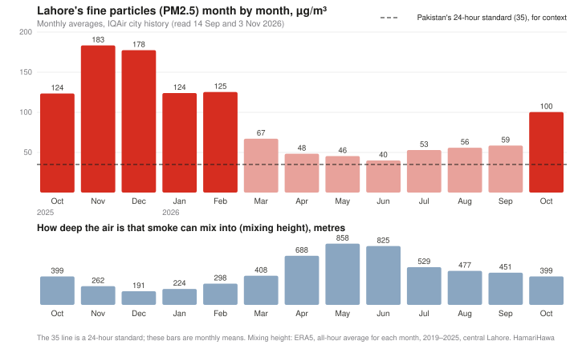
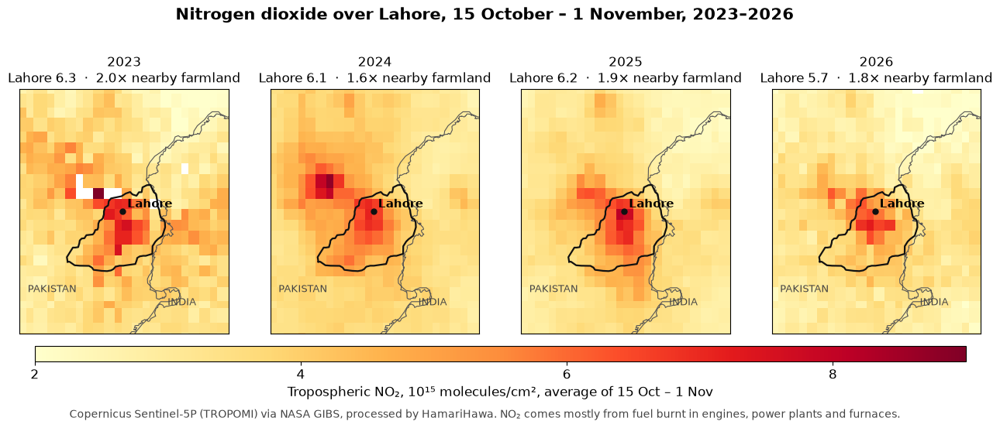
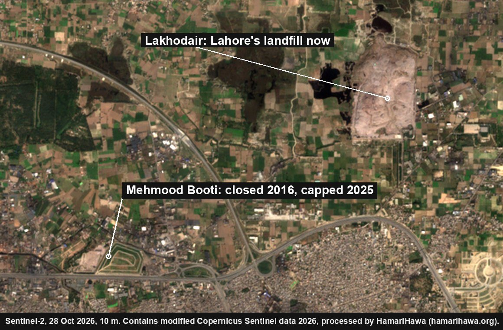
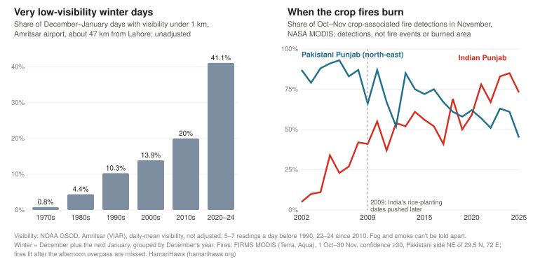
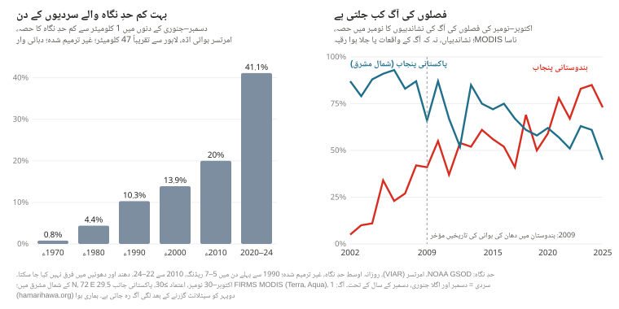
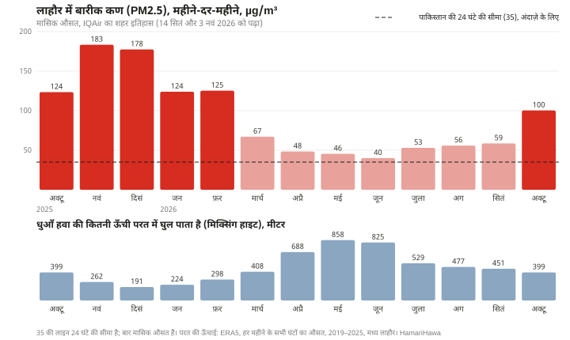
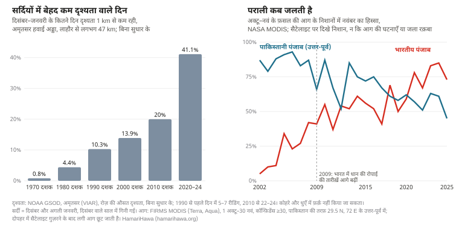

Pakistan's standard for fine particles (PM2.5) is 35 µg/m³ averaged over 24 hours, and 15 over a year. Lahore's monthly average was above 35 in every month from October 2025 to October 2026, not only in the smog season. Even from April to September 2026, its cleanest months, ground monitors averaged 40 to 59 µg/m³ a month. That is the baseline: traffic, industry, brick kilns, power plants, household fuel and rubbish burning, all year round. In October and November two things are added on top. The layer of air that smoke can mix into becomes about half as deep, and fires break out on farmland around the city after the rice harvest. October 2025's average was about two and a half times the April–September 2026 average, and November 2025's about three and a half times. The satellite record suggests the burning near Lahore is not over yet: in each of the last seven seasons, between 37% and 63% of the crop-fire detections within 100 km of the city on the Pakistani side came after 1 November.
40–59µg/m³ monthly average PM2.5 in Lahore, April–September 2026, its cleanest months
860 → 260 mdepth of air the smoke mixes into, May against November, averaged over all hours
781crop-fire detections within 40 km of Lahore, 15 Oct–1 Nov 2026
37–63%of each season's crop-fire detections within 100 km, Pakistani side, came after 1 November, 2019–2025
Check this report. Every number here is in data.json, with its source, period, place, units and how it was calculated. Fire counts are NASA satellite heat detections, not confirmed fires. This is a monitoring report: it sets out what instruments show, and says where they can't separate one source from another.
What's in the air: a quick guide
Lahore's winter smog is mostly fine particles, PM2.5. Several gases matter because they turn into particles in the air or form ozone; one of them, methane, matters mainly for the climate. This guide shows which is which, and which ones satellites can see.
The main pollutants in this report
Pollutant
What it is
Main sources around Lahore
Part of the smog?
Seen from space?
PM2.5 fine particles
Particles 2.5 µm across or smaller, small enough to reach deep into the lungs [49]
Engines, kilns, industry, crop and rubbish fires, household fuel; some form in the air from gases [38, 49]
Yes. This is the haze, and what the 35 µg/m³ standard covers [14]
Not directly: satellites see haze through the whole depth of the air, so ground monitors measure what people breathe
PM10 coarser particles
Particles up to about 10 µm, including PM2.5 [49]
Dust from roads, construction and fields, plus everything in PM2.5
Partly. Dust adds coarse particles on a few days, but it isn't most of the winter smog (see Dust, below)
Dust is estimated with models (we use CAMS [43])
NO₂ nitrogen dioxide
A gas from fuel burnt at high temperature
Vehicles, power plants, furnaces
Not itself, but it turns into particles and helps form ozone [49, 50]
Yes, daily from Sentinel-5P; used in this report [20]
SO₂ sulphur dioxide
A gas from burning fuel that contains sulphur
Industry and power plants burning fossil fuels, high-sulphur diesel [51]
Not itself, but it turns into particles [51]
Sentinel-5P measures it; not used here
Ammonia NH₃
A gas
Fertiliser and manure [38]
Not itself, but it combines with products of NO₂ and SO₂ to form particles [38]
Not used here
CO carbon monoxide
A colourless, odourless gas from incomplete burning; it reduces the oxygen the blood can carry [52]
Mostly vehicles [52]; also fires
No. It is most of transport's emissions by weight in Lahore's inventory, but it isn't a particle [5]
Sentinel-5P measures it; not used here
Methane CH₄
A gas, the main part of natural gas
Rotting rubbish in dumps such as Lakhodair; also livestock and gas leaks [53]
No. It warms the climate and helps form ground-level ozone [53]
Yes, for large plumes: Carbon Mapper detected them over Lakhodair [17]
Ozone O₃ (near the ground)
A gas that isn't emitted directly: it forms when nitrogen oxides and other gases react in sunlight [50]
Formed downwind from traffic and industry gases [50]
No. A separate pollutant, usually highest on hot, sunny days [50]
Not used here
The baseline: above 35 in every month

IQAir's city history for Lahore [1], which averages its network of ground monitors, recorded a monthly average of 40 µg/m³ in June 2026, the lowest month, and 45 to 59 in the other months from April to September. From October 2025 to February 2026 the monthly average was 124 to 183, and in October 2026 it was 100. Pakistan's PM2.5 standards are 35 µg/m³ over 24 hours and 15 over a year; the World Health Organization's annual guideline is 5 [14, 15]. The 35 line on the chart is the daily standard, shown for context: these are monthly averages, and they can't tell us how many days were above it. Even the warm-season months alone averaged about 50 µg/m³, more than three times the annual standard.
All monthly figures here come from the same IQAir product, read on 14 September and 3 November 2026; the months the two readings share are identical. IQAir's 2025 annual report table gives slightly different values for the same months (for example 171 rather than 178 for December 2025) [2]; we don't mix the two.
The sources behind the baseline run all year. They include vehicles, factories, brick kilns, power plants, generators, wood and dung burnt for cooking and heating, rubbish burnt in the open and dust. Some PM2.5 also forms in the air itself from gases such as sulphur dioxide, nitrogen oxides and ammonia, including ammonia from fertiliser and manure [38]. The sections below show what satellites and published data can say about some of them; the list isn't complete.
Traffic and industry: nitrogen dioxide
Nitrogen dioxide (NO₂) comes from fuel burnt at high temperature: vehicle engines, power plants and furnaces. The European Sentinel-5P satellite measures the amount of NO₂ in the column of air between the ground and the top of the lower atmosphere (the tropospheric NO₂ column, in molecules per cm²) every day, a record that starts in 2018 [20, 45]. We averaged the same 18 days, 15 October to 1 November, in each year from 2023, the first year for which we could read the images NASA's map service publishes over Lahore.
Tropospheric NO₂ column over Lahore, average of 15 October–1 November, 2023–2026

Every year, Lahore's NO₂ column is about 1.6 to 2 times the level over farmland to its south-west. 2026 is about 10% below 2023, but we don't read that as a trend: the values are read back from the colour bands of published images, each band spans a range of values, clouds leave a different number of usable days each year (about 6 to 7 per pixel in 2023 and 2026), and the 2024 and 2025 images have a markedly different coverage pattern, with a value for every pixel on every day, whose cause we have not established here. This limits comparison between the years. The highest levels usually sit over the city core; in 2023 the peak was in the north-west, near Shahdara and the Ravi. On HamariHawa's live map, which ranks places by how far their NO₂ column stands above their surroundings, Lahore's south-centre was third in Pakistan for the 14 days to 1 November, after Rawalpindi and Karachi [29]. That is a relative ranking of a satellite measurement, not an official ranking of the air at street level.
What NO₂ can't do: it can't separate a motorcycle from a truck, a bus or a factory chimney, and it says nothing about fuel quality.
Vehicles: what the official numbers say
Punjab's Excise department counted 7.48 million vehicles registered in Lahore on 30 September 2024 [7], including 5.23 million motorcycles (70%), 1.68 million cars, 229,000 rickshaws, 131,000 pickups and vans, 69,000 tractors, 57,000 buses and 44,000 trucks. That is 30% of all vehicles registered in Punjab, for a city with about 10% of its people, and the Urban Unit notes that many of the province's vehicles are registered in Lahore. Registrations don't measure the vehicles actually operating in the city, and we found no published count of those. Traffic police have estimated that about 15,000 heavy vehicles enter the city each day (2022) [8].
Exhaust PM2.5 from road vehicles in all of Punjab, 2020, by type (Urban Unit, Emission Inventory of Punjab 1990–2020)
Vehicle type
Thousand tonnes a year
Share of exhaust
Heavy-duty vehicles and buses
17.6
55%
Motorcycles
5.8
18%
Cars
4.3
14%
Light-duty vehicles
4.3
13%
Motorcycles are most of the fleet but not most of the exhaust particles. In the European emission factors these inventories use [24], an older diesel bus or truck has a PM2.5 exhaust factor per kilometre tens of times that of a four-stroke motorcycle; that compares technology categories, not vehicles measured in Lahore. The Urban Unit's Punjab inventory for 2020 [6] puts heavy-duty vehicles and buses at 55% of road vehicles' exhaust PM2.5 across the province and motorcycles at 18%; for NOx, heavy vehicles are about two-thirds and motorcycles about 1%. In the Urban Unit's Lahore inventory [5], motorcycles account for most of transport's emissions by weight, and carbon monoxide makes up about 80% of transport's total emissions by weight; that is where the idea that motorcycles are the biggest source comes from. In the Punjab inventory, tyre and brake wear and road abrasion add about 15% on top of exhaust PM2.5 (about 13% of road traffic's total), and dust kicked up from roads is not counted at all.
Fuel matters too. Pakistan has required imported petrol to meet the Euro V standard since 2020 and imported diesel since 2021 [9]. Fuel from local refineries is a different matter: as of 2025, only one made Euro V diesel, two made Euro III and the rest made diesel with far more sulphur [10]. The refinery upgrade policy, as amended in August 2026, gives each refinery five years from signing its upgrade agreement, subject to specified extension provisions (a cure period of up to a year, force majeure and a possible further year); its tariff incentives run for seven years [11]. The federal cabinet's Economic Coordination Committee approved the upgrade agreement, with its five-year completion period, on 14 September 2026 [12]. New vehicles are required to meet only the older Euro II standard [13]. Satellites can't see any of this: what reaches them is the combined NO₂ of every engine and chimney.
Brick kilns, power plants and industry
Research datasets that map kilns from satellite images [25] place 890 brick kilns within 50 km of central Lahore on the Pakistani side, 196 of them within 25 km. We merged the two datasets and removed points within about 60 m of each other; across the whole 50 km circle about 70 pairs remain less than 100 m apart, so a few kilns may be counted twice. These are mapped kilns, not a census of kilns operating today. Kilns burn fuel within their firing zones and discharge exhaust through chimneys [48]. Fire satellites rarely detect them: only 20 detections within 40 km were at kilns from 15 October to 1 November. Whether a kiln is running or shut can't be read from these images.
OpenStreetMap shows seven oil- and gas-fired power plants within 50 km, five of them to the west and north-west around Sheikhupura, the largest being the 1,180 MW Bhikki plant [27], and two near Raiwind to the south [26]. Atlas and Saba had their power purchase agreements terminated effective 30 September 2024 [42, 47]. Plant locations and contract status don't establish which plants run today or what they emit. OpenStreetMap also shows 181 mapped industrial areas within 50 km on the Pakistani side (as of October 2026).
Rubbish dumps: methane, and no large fires seen

Mehmood Booti, a 14-million-tonne dump on Lahore's Ring Road, closed in 2016. In March 2025 BBC Urdu reported [16] that it had been covered with soil and fitted with pipes to vent its methane; the gas would be sold to nearby industry if there was enough of it, or burnt off if not. According to the same report, most of the city's rubbish, about 5,000 tonnes a day, now goes to Lakhodair, a few kilometres to the north-east.
No clear large surface fire was identified on either dump in the usable images we examined. NASA's fire satellites caught a handful of detections on the Mehmood Booti mound in the 2020–2022 seasons and none since, and the clear Sentinel-2 images of Lakhodair we checked since October 2024 show no large fire on the dump's surface. The satellites do pick up heat on several days a season within about a kilometre of both dumps; in the images we checked, these were on neighbouring sites. Small, short-lived, smoke-obscured or underground fires can be missed. Lakhodair also gives off methane: Carbon Mapper [17, 44] detected methane plumes from it on 11 of the 12 dates it observed the site (19 plumes in all, the first in June 2023 and the latest in March 2026), and estimates its emissions at about 1,560 kg of methane an hour, with a reported uncertainty of about 440 kg an hour (no confidence level is given). That figure is Carbon Mapper's persistence-adjusted source estimate, combining emission rates by observation date; it is not a continuous measurement of the whole landfill. Methane warms the climate and helps form ozone [53], but it isn't itself PM2.5, and finding methane doesn't rule out other emissions. Rubbish burnt in small open fires across the city is a different matter: those fires can be missed by satellites.
Dust
The Copernicus CAMS global model, as served by Open-Meteo, has a field labelled dust. It is the model's largest dust size bin, with particle radii of 0.9–20 µm, not total dust [23, 43]. Its daily mean at central Lahore reached 50 µg/m³ or more on nine days in October 2026: 1–3, 7–11 and 30 October. On those days the model's PM2.5 averaged about 65 µg/m³, against about 68 on the other days. In this CAMS sample, days with a higher modelled dust signal did not have higher average modelled PM2.5. This comparison does not isolate dust's contribution to measured pollution or rule out local road and construction dust, which a model with a grid of about 45 km can't resolve, and the model reads Lahore well below ground monitors. (PM10 includes particles with aerodynamic diameters up to about 10 µm, including PM2.5.)
What changes in October
1. The air gets shallower

Wind at Lahore is light all year, about 1.8 to 2.4 m/s as a monthly average, and October's is no calmer than September's. What changes is the height of the layer the smoke can mix into. Averaged over all hours of the day, it reaches around 830–860 m in May and June, when the sun-heated ground stirs the air; by October it is about 400 m, by November 260 m and by December 190 m. Afternoons are deeper and cold, clear nights much shallower. In an idealized picture, with the same emissions and everything else held constant, air half or a third as deep makes the smoke roughly two or three times as concentrated, before a single extra fire is lit.
This year's October was not unusual. The average mixing height over 1–26 October was about 360 m, against 320 to 490 m in 2019–2025; 2023 and 2025 were lower. IQAir's city history gives Lahore's October 2026 average as 100 µg/m³, against 124 in October 2025 [1]. The Pakistan Air Quality Initiative (PAQI) [3], comparing the 26 monitoring sites that reported in both years, found the October average down 27%, from 136.3 to 100.1 µg/m³; that figure is PAQI's, not a comparison of the chart's bars. PAQI's model estimated that this October's weather alone lowered PM2.5 by about 19%, compared with what this October's emissions would have produced under last October's weather.
2. Crop burning on the city's edge
Every day from 1 October to 1 November 2026: NASA's satellite photo of Punjab around Lahore, with that day's hotspot detections of all kinds (all satellites)
The fire counts here are crop-associated hotspot detections, "detections" for short: heat spots that NASA's satellites picked up on farmland, away from known kilns, dumps, industry and towns. That a detection is crop burning is our inference from where it is. Detections are not the same as fires: a big field fire can cover several spots, a field burning over two days counts twice, and fires that start and end between satellite passes, or burn under cloud, are missed. They are not burned area or emissions.
In the time-lapse frame, the satellites detected 135 hotspots of all kinds on 1 October and 1,538 on 1 November; 121 and 1,490 of them were crop-associated. From 15 October to 1 November, there were 781 crop-associated detections within 40 km of central Lahore, about as far as Muridke or Raiwind. The biggest share was across the Ravi in Sheikhupura district (322), then Tarn Taran (149) and Amritsar (106) on the Indian side, Nankana Sahib (77), Lahore district itself (62) and Kasur (50). Within 100 km, on both sides of the border, there were 7,130.
Crop-associated fire detections within 40 km of central Lahore, 15 October–1 November 2026, all satellites
District
Detections
Sheikhupura
322
Tarn Taran (India)
149
Amritsar (India)
106
Nankana Sahib
77
Lahore
62
Kasur
50
Gujranwala
15
Compared year to year on one satellite (NOAA-20), crop-associated detections within 100 km of Lahore on the Pakistani side numbered 1,654 over these 18 days, a quarter fewer than in 2025 (2,193) and 14% fewer than in 2024 (1,925), but more than in 2019 (812) or 2023 (622). Over the same days only 72 detections within 40 km were not on farmland (in towns, at kilns, industrial hot spots and near dumps); satellites see open field fires well and enclosed burning poorly or not at all.
On the Indian side, Punjab's crop-fire detections have fallen steeply since 2021; the busiest day so far this season had 122 in the whole state on one satellite. Part of that fall may not be less burning: NASA has reported that more farmers there now burn later in the afternoon, after the satellites pass over [39, 40], so fewer detections don't necessarily mean less burning or less smoke. In six of the last seven seasons, Indian Punjab's detections peaked in the first week of November. Diwali, on 8 November this year, moves between mid-October and mid-November, while the burning follows the harvest; the fire peaks don't line up with the festival's date, and harvest timing alone can't test whether fireworks add measurably to Lahore's air.
The burning is probably not over
Crop-associated fire detections within 100 km of central Lahore, Pakistani side, NOAA-20 satellite; the last column is the share of 1 October–30 November detections that came after 1 November
Season
1–14 Oct
15 Oct–1 Nov
2–15 Nov
16–30 Nov
After 1 Nov
2019
262
812
571
1,287
63%
2020
1,032
970
1,309
803
51%
2021
934
3,139
2,749
779
46%
2022
483
1,622
1,203
713
48%
2023
897
622
1,073
765
55%
2024
831
1,925
1,261
508
39%
2025
372
2,193
1,337
165
37%
2026
508
1,654
…
…
In every season since 2019, more than a third of the NOAA-20 crop-associated detections within 100 km of Lahore on the Pakistani side came after 1 November, and the first two weeks of November alone had between 570 and 2,750. In recent years detections have ended earlier, with few left after mid-November in 2025. With November's air shallower still than October's, the next two weeks are when crop smoke and the year-round baseline are most likely to stack up.
Was there smog before?
Yes. Thick winter haze over Lahore is decades old. A study that sampled Lahore's air every sixth day from January 2007 to January 2008 found a year-long average PM2.5 of about 194 µg/m³ [31]. That was one study with its own sites and methods, so it can't be set against today's monitor networks to show a trend. Researchers were already describing denser, longer-lasting winter fog in 2008 [33]. Reliable public monitors were scarce until about 2016–2019, so earlier episodes left fewer numbers behind.

Airport weather records show when visibility got worse [30]. At Lahore's airport, days whose average visibility was under 1 km were almost absent in the October–January winters from 1992–93 to 1997–98 (none or one a winter) and became common from 1998–99, at 1 to 23 a winter and often more than five. Amritsar's airport, about 47 km away and with the longest record, shows a similar step and a further rise since: such days made up under 1% of December and January in the 1970s, 10% in the 1990s, 20% in the 2010s and 41% in 2020–24. These are unadjusted daily averages, and the airport took 5 to 7 readings a day in the 1970s and 1980s against 22 to 24 since the 2010s, which can shift a daily average on its own. A study of 82 weather stations across Pakistan and India found fog becoming more frequent in two steps, around 1990 and 1998, alongside a gradual rise in relative humidity [32]. Visibility records can't separate fog from smoke.
What changed over those decades:
The burning moved into the shallow-air season, on the Indian side first. In 2002–04 most of Indian Punjab's crop-fire detections came in October; since 2021, 67–85% have come in November. Laws in Indian Punjab and Haryana in 2009 set later dates for planting rice to save groundwater, which pushed the harvest, and the burning, later [34, 35]. Indian Punjab's detections have since fallen steeply, though part of that fall reflects burning moved later in the day, after the satellites pass [39].
On the Pakistani side, detections grew and moved earlier. In north-east Pakistani Punjab, MODIS satellites made about 600–700 detections between mid-October and the end of November in 2002–04, and about 1,600 in 2022–25; the share falling in November dropped from about 80–90% to about half. Within 100 km of Lahore the two sides now have similar counts, after a decade in which the Indian side usually had four to five times as many. The same caveats about detections apply.
The city grew. Lahore district's population went from 6.3 million in 1998 to 13.0 million in 2023 [28], and registered vehicles from about 1.95 million in 2008 [36] to 7.48 million in 2024 [7].
Fuel shortages. During the gas shortages of the early 2010s, newspapers reported factories in Lahore and elsewhere in Punjab switching from gas to coal, rice husk and even tyres [41, 46]. This report does not quantify their additional contribution.
The weather: part of the story, by an amount we can't measure here. Since 1980, November's mixing height at Lahore, averaged over all hours, has fallen about 6 m a decade, roughly 10% over 45 years and less than its swing from year to year, and November wind shows no trend [22]. In this 1980–2025 series, 2025 had the lowest November mixing height and 2023 the third-lowest, conditions that favour pollution accumulating near the ground. These two measures leave out humidity and other conditions that matter for fog, so they can't separate the long rise in haze into emissions and weather.
What satellites can't tell you
Satellites can't give each source's share of Lahore's PM2.5. Two recent emission inventories estimate how much each source emits. The Urban Unit's 2023 emission inventory for Lahore [5] put transport at about 35% of PM2.5 emissions (397 of 1,120 tonnes a year), with crop-residue burning (371 tonnes) and waste burning (320 tonnes) next, while noting that its vehicle figures may be an overestimate. Its often-quoted 83% for transport is a share of all pollutants added together by weight, most of it carbon monoxide. PAQI's national landscape report [37], reported by Dawn in December 2025 [4], estimated Lahore's primary PM2.5 emissions as 35% from transport, 28% from heavy industry and 17% from brick kilns; Punjab's Environment Protection Agency disputed its data at the time. These are shares of what is emitted, not of what people breathe: some PM2.5 forms in the air from gases, wind carries smoke in and out, and rain and settling remove it. Inventories, ground measurements and source-apportionment studies answer different questions, and their percentages can't be converted into one another.
What the record does show is narrower but solid: Lahore's monthly average was above 35 µg/m³ in every month we examined; its NO₂ column is high every year, with no clear trend in the images from 2023 to 2026; and in October the air gets shallower and crop-fire detections rise within reach of the city. Vehicle types, fuel quality, dust, construction and street burning of rubbish need measurements on the ground.
How we did this
Monthly PM2.5: IQAir's Lahore city history (Historic, Monthly), averaging its monitors in Lahore (61 stations when first read). October 2025–August 2026 read on 14 September 2026; September and October 2026 read on 3 November 2026, when the overlapping months matched exactly. October 2026 matched-site comparison from PAQI as reported by ProPakistani.
Mixing height and wind: ERA5 reanalysis (boundary-layer height, 10 m wind) via Open-Meteo (models=era5), hourly, at 31.55 N, 74.34 E, averaged over all hours of each month, 2019–2025; long-term November series 1980–2025.
Fires: NASA FIRMS [18] active-fire data from VIIRS (Suomi NPP, NOAA-20, NOAA-21) and MODIS (Terra, Aqua), from HamariHawa's daily archive. Low-confidence VIIRS detections and MODIS detections below 30 confidence are dropped; the same ~400 m spot seen by several satellites on one Pakistan-time day counts once, and a MODIS detection is dropped where VIIRS saw a fire within about 1 km. The recent 2019–2026 comparisons use NOAA-20 only; the longer 2002–2025 history uses MODIS, as described below. "Crop-associated" means on farmland and away from known kilns, dumps, industry and towns, by land-cover maps. Distances are from central Lahore (31.55 N, 74.34 E). "Pakistani side" means Pakistani territory. Cloud cover and satellite gaps are not corrected.
Time-lapse: NASA Worldview [19] VIIRS (NOAA-20) true-colour images, one a day, with that day's hotspot detections of all kinds from all satellites, within the frame 30.0–32.6 N, 72.4–75.9 E.
NO₂: Copernicus Sentinel-5P TROPOMI tropospheric NO₂ column, as published in NASA GIBS imagery [19] (layer TROPOMI_L2_Nitrogen_Dioxide_Tropospheric_Column), read back from its colour bands (accurate to about one band), averaged over 15 October–1 November. Lahore box 31.40–31.65 N, 74.20–74.45 E; farmland box 31.0–31.3 N, 73.8–74.1 E. Pixels are about 3.5 × 5.5 km, so peaks place a neighbourhood, not a road.
Dumps: Sentinel-2 [21] shortwave infrared (20 m) on clear passes since October 2024; Carbon Mapper's source record for Lakhodair; BBC Urdu, 24 March 2025.
Vehicles: Punjab Excise & Taxation, registered vehicles by district, 30 September 2024; Urban Unit, Emission Inventory of Punjab 1990–2020 (Annexes B and D); EMEP/EEA emission inventory guidebook road-transport factors; heavy-vehicle entries as reported by Dawn, 3 December 2022; fuel standards as reported by Dawn (2020) and The Express Tribune (May 2025); refinery policy from the Petroleum Division (amended August 2026) and the Press Information Department (14 September 2026).
Kilns, plants and industry: SentinelKilnDB and the Brick Kiln Dataset for Pakistan's IGP Region, merged; power plants and industrial areas from OpenStreetMap; Bhikki capacity from NEPRA.
Dust: CAMS global model via Open-Meteo (about 45 km grid), hourly "dust" and PM2.5 at 31.55 N, 74.34 E, averaged by Pakistan-time day, October 2026.
History: NOAA Global Surface Summary of the Day, Lahore airport (OPLA, 1992–2018) and Amritsar airport (VIAR, 1973–2025): days with daily-mean visibility under 1 km, unadjusted, winters with at least 70% of days reported; a winter is December plus the following January, grouped by December's year (October–January for Lahore). NASA FIRMS MODIS (Terra and Aqua) standard fire data, 1 October–30 November 2002–2025, confidence 30 or more, Pakistani side north-east of 29.5 N, 72 E. ERA5 November mixing height and wind, 1980–2025.
Sources
IQAir. Air quality in Lahore: historic monthly averages (city history). Read 14 September and 3 November 2026. www.iqair.com
IQAir. World's most polluted cities, 2025 city table with monthly values (2025 World Air Quality Report data). Read 14 September 2026. www.iqair.com
ProPakistani. “Lahore's smog drops 27% this October, but weather did most of the work” (PAQI analysis). 2 November 2026. propakistani.pk
Imran Gabol. “Transport sector emerges as key cause of air pollution” (on PAQI's national landscape report). Dawn, 10 December 2025. www.dawn.com
The Urban Unit, Government of Punjab. Sectoral Emissions Inventory of Lahore. 2023. urbanunit.gov.pk
The Urban Unit, Government of Punjab. Emission Inventory of Punjab 1990–2020 (Annexes B and D). 2023. urbanunit.gov.pk
Excise, Taxation & Narcotics Control Department, Punjab. Total vehicles registered in Punjab as of 30 September 2024. excise.punjab.gov.pk
Asif Chaudhry. “40pc of 7m registered vehicles in Lahore contributing to smog”. Dawn, 3 December 2022. www.dawn.com
Khaleeq Kiani. “Govt orders all petrol, diesel imports be Euro-V compliant”. Dawn, 9 July 2020. www.dawn.com
“Policy delays threaten $5b refinery investments”. The Express Tribune, 7 May 2025. tribune.com.pk
Petroleum Division, Government of Pakistan. Pakistan Oil Refining Policy for Upgradation of Existing (Brownfield) Refineries, 2023, amended February 2024 and August 2026: §6.1.2.2, §6.1.3.5, §6.1.4.1. petroleum.gov.pk
Press Information Department. PR No. 146, Economic Coordination Committee meeting, 14 September 2026. pid.gov.pk
Associated Press of Pakistan. National Assembly climate committee briefing on vehicle emission standards. 22 October 2025. www.app.com.pk
Pakistan Environmental Protection Agency. National Environmental Quality Standards for Ambient Air (SRO 1062(I)/2010). leap.unep.org
World Health Organization. WHO global air quality guidelines. 22 September 2021. www.who.int
Umar Draz Nangiana. Report on the Mehmood Booti landfill (in Urdu). BBC Urdu, 24 March 2025. www.bbc.com
Carbon Mapper. Source record for the Lakhodair landfill, Lahore (emission estimate, persistence, plume list), via the Carbon Mapper catalog API. Read 2 November 2026. api.carbonmapper.org
ECMWF / Copernicus Climate Change Service. ERA5 hourly reanalysis, via the Open-Meteo historical weather API. open-meteo.com
Copernicus Atmosphere Monitoring Service (CAMS) global forecasts, via the Open-Meteo air quality API. open-meteo.com
European Environment Agency. EMEP/EEA air pollutant emission inventory guidebook 2023, road transport chapter. www.eea.europa.eu
SentinelKilnDB (IIT Gandhinagar, CC BY-NC 4.0) and the Brick Kiln Dataset for Pakistan's IGP Region (CC BY 4.0).
OpenStreetMap contributors. Power plants and industrial land use (ODbL). www.openstreetmap.org
NEPRA. Tariff determination for Quaid-e-Azam Thermal Power (Bhikki), January 2023. nepra.org.pk
Pakistan Bureau of Statistics. Population and Housing Census 2023 and 1998, district results. www.pbs.gov.pk
HamariHawa. Nitrogen dioxide hotspots, 14 days to 1 November 2026. hamarihawa.org
NOAA National Centers for Environmental Information. Global Surface Summary of the Day, stations 41641099999 (Lahore airport) and 42071099999 (Amritsar airport). www.ncei.noaa.gov
Stone, E., Schauer, J., Quraishi, T. A. & Mahmood, A. Chemical characterization and source apportionment of fine and coarse particulate matter in Lahore, Pakistan. Atmospheric Environment 44(8), 2010. doi.org
Syed, F. S., Körnich, H. & Tjernström, M. On the fog variability over south Asia. Climate Dynamics 39(12), 2012. doi.org
Report on a Suparco study of winter fog. Dawn, 30 December 2008. www.dawn.com
Agarwala, M., Bhattacharjee, S. & Dasgupta, A. Unintended consequences of Indian groundwater preservation law on crop residue burning. Ashoka University working paper. www.ashoka.edu.in
Jethva, H. et al. Connecting crop productivity, residue fires, and air quality over northern India. Scientific Reports 9, 2019. www.nature.com
JICA. The Project for Lahore Urban Transport Master Plan, final report. 2012. openjicareport.jica.go.jp
Abid Omar, Pakistan Air Quality Initiative. Unveiling Pakistan's Air Pollution: A National Landscape Report on Health Risks, Sources and Solutions. 27 November 2025. zenodo.org
World Bank. Punjab Clean Air Program (P508222): Environmental and Social Systems Assessment. 3 March 2025. documents1.worldbank.org
NASA Earth Observatory. “New timing for stubble burning in India”. 15 December 2025. science.nasa.gov
Jethva, H. Timing the flames: geostationary satellite detection of diurnally shifting stubble burning in northwestern India. Remote Sensing 18(10), 1506, 2026. www.mdpi.com
“Toxic emissions: alternative factory fuels causing respiratory disease”. The Express Tribune, 24 April 2013. tribune.com.pk
“Govt ends contracts with five IPPs to save Rs411bn”. Dawn, 11 October 2024. www.dawn.com
Open-Meteo. CAMS variable mapping (CamsDomain.swift: dust = aermr06), and ECMWF parameter database, parameter 210006, dust aerosol (0.9–20 µm) mixing ratio. github.com; codes.ecmwf.int; ECMWF forum, “PM10 and PM2.5 global products” (dust bins given as radii). forum.ecmwf.int
TROPOMI science team (KNMI, for ESA/Copernicus). Nitrogen dioxide data product. www.tropomi.eu
“Industrialists switch to alternative power” (Express Tribune, 28 April 2012) and “Tyre burning: three steel factories reopened” (Express Tribune, June 2011). tribune.com.pk; tribune.com.pk
Central Power Purchasing Agency (Guarantee) Ltd. Annual Report 2025, table of terminated power purchase agreements, printed page 42. www.cppa.gov.pk
National Energy Efficiency and Conservation Authority (NEECA). “Industrial Innovation – ZigZag Technology”. 29 December 2020. neeca.gov.pk
US Environmental Protection Agency. “Particulate Matter (PM) Basics”. www.epa.gov
US Environmental Protection Agency. “Ground-level Ozone Basics”. www.epa.gov
US Environmental Protection Agency. “Sulfur Dioxide Basics”. www.epa.gov
US Environmental Protection Agency. “Basic Information about Carbon Monoxide (CO) Outdoor Air Pollution”. www.epa.gov
United Nations Environment Programme and Climate and Clean Air Coalition. Global Methane Assessment: Benefits and Costs of Mitigating Methane Emissions. 2021. www.ccacoalition.org
رپورٹ · 2 نومبر 2026 · نظرثانی 3 نومبر 2026
لاہور کی سموگ: سال بھر کی بنیادی آلودگی، اور اکتوبر میں کیا بدل جاتا ہے
پاکستان میں فضا میں باریک ذرات (PM2.5) کی مقررہ حد 24 گھنٹے کی اوسط کے لیے 35 µg/m³ اور سالانہ اوسط کے لیے 15 ہے۔ اکتوبر 2025 سے اکتوبر 2026 تک لاہور میں ہر مہینے کی اوسط 35 سے اوپر رہی، اور یہ صرف سموگ کے موسم کی بات نہیں۔ اپریل سے ستمبر 2026 کے مہینے، جو اس عرصے میں سب سے صاف رہے، ان میں بھی زمینی مانیٹروں کی ماہانہ اوسط 40 سے 59 µg/m³ رہی۔ یہ وہ آلودگی ہے جو سال بھر رہتی ہے: ٹریفک، صنعت، اینٹوں کے بھٹے، بجلی گھر، گھریلو ایندھن اور کوڑا جلانا، سارا سال۔ اکتوبر اور نومبر میں اس پر دو چیزوں کا اضافہ ہو جاتا ہے۔ ہوا کی جس تہہ میں دھواں پھیل سکتا ہے، اس کی گہرائی تقریباً آدھی رہ جاتی ہے، اور دھان کی کٹائی کے بعد شہر کے ارد گرد کھیتوں میں آگ لگنے لگتی ہے۔ اکتوبر 2025 کی اوسط اپریل–ستمبر 2026 کی اوسط سے تقریباً ڈھائی گنا تھی، اور نومبر 2025 کی تقریباً ساڑھے تین گنا۔ سیٹلائٹ کا ریکارڈ اشارہ دیتا ہے کہ لاہور کے قریب جلانے کا سلسلہ ابھی ختم نہیں ہوا: پچھلے سات موسموں میں سے ہر ایک میں، شہر سے 100 کلومیٹر کے اندر پاکستانی جانب فصلوں کی آگ کی 37% سے 63% نشاندہیاں 1 نومبر کے بعد ہوئیں۔
40–59µg/m³ لاہور میں PM2.5 کی ماہانہ اوسط، اپریل–ستمبر 2026، اس کے سب سے صاف مہینے
860 → 260 mہوا کی وہ گہرائی جس میں دھواں گھلتا ہے، مئی بمقابلہ نومبر، تمام گھنٹوں کی اوسط
781لاہور سے 40 کلومیٹر کے اندر فصلوں کی آگ کی نشاندہیاں، 15 اکتوبر–1 نومبر 2026
37–63%ہر موسم میں 100 کلومیٹر کے اندر، پاکستانی جانب، فصلوں کی آگ کی نشاندہیوں کا اتنا حصہ 1 نومبر کے بعد آیا، 2019–2025
اس رپورٹ کو خود جانچیں۔ اس رپورٹ کا ہر عدد data.json میں موجود ہے، اپنے ذریعے، مدت، جگہ، اکائیوں اور حساب کے طریقے کے ساتھ۔ آگ کی گنتی ناسا کے سیٹلائٹ سے پکڑی گئی حرارت ہے، تصدیق شدہ آگ نہیں۔ یہ نگرانی کی رپورٹ ہے: یہ بتاتی ہے کہ آلات کیا دکھاتے ہیں، اور کہاں وہ ایک ذریعے کو دوسرے سے الگ نہیں کر سکتے۔
ہوا میں کیا ہے: ایک مختصر رہنما
لاہور میں سردیوں کی سموگ زیادہ تر باریک ذرات، یعنی PM2.5، پر مشتمل ہوتی ہے۔ کئی گیسیں اس لیے اہم ہیں کہ وہ ہوا میں ذرات میں بدل جاتی ہیں یا اوزون بناتی ہیں؛ ان میں سے ایک، میتھین، اصل میں موسمیاتی تبدیلی کے حوالے سے اہم ہے۔ نیچے کی جدول میں دیکھیے کہ کون سی چیز کیا ہے، اور سیٹلائٹ کن کو دیکھ سکتے ہیں۔
اس رپورٹ میں شامل اہم آلودہ مادے
آلودہ مادہ
یہ کیا ہے
لاہور کے ارد گرد اہم ذرائع
سموگ کا حصہ؟
خلا سے نظر آتا ہے؟
PM2.5 باریک ذرات
2.5 µm یا اس سے چھوٹے ذرات، اتنے چھوٹے کہ پھیپھڑوں میں گہرائی تک پہنچ جائیں [49]
انجن، بھٹے، صنعت، فصلوں اور کوڑے کی آگ، گھریلو ایندھن؛ کچھ ذرات ہوا میں گیسوں سے بنتے ہیں [38, 49]
ہاں۔ یہی دھند ہے، اور 35 µg/m³ کا معیار اسی پر لاگو ہوتا ہے [14]
براہِ راست نہیں: سیٹلائٹ پوری فضا کی گہرائی میں دھند دیکھتے ہیں، اس لیے لوگ جو ہوا سانس میں لیتے ہیں وہ زمینی مانیٹر ناپتے ہیں
PM10 موٹے ذرات
تقریباً 10 µm تک کے ذرات، PM2.5 سمیت [49]
سڑکوں، تعمیرات اور کھیتوں کی گرد، اور وہ سب کچھ جو PM2.5 میں ہے
جزوی طور پر۔ چند دنوں میں گرد موٹے ذرات بڑھاتی ہے، مگر سردیوں کی سموگ کا بڑا حصہ یہ نہیں (نیچے گرد دیکھیں)
گرد کا اندازہ ماڈلز سے لگایا جاتا ہے (ہم CAMS استعمال کرتے ہیں [43])
NO₂ نائٹروجن ڈائی آکسائیڈ
زیادہ درجہ حرارت پر جلنے والے ایندھن سے نکلنے والی گیس
گاڑیاں، بجلی گھر، بھٹیاں
خود نہیں، مگر یہ ذرات میں بدلتی ہے اور اوزون بنانے میں مدد دیتی ہے [49, 50]
ہاں، Sentinel-5P سے روزانہ؛ اس رپورٹ میں استعمال ہوئی [20]
SO₂ سلفر ڈائی آکسائیڈ
سلفر والا ایندھن جلانے سے نکلنے والی گیس
فوسل ایندھن جلانے والی صنعت اور بجلی گھر، زیادہ سلفر والا ڈیزل [51]
خود نہیں، مگر یہ ذرات میں بدلتی ہے [51]
Sentinel-5P اسے ناپتا ہے؛ یہاں استعمال نہیں ہوئی
امونیا NH₃
ایک گیس
کھاد اور گوبر [38]
خود نہیں، مگر یہ NO₂ اور SO₂ سے بننے والے مادوں سے مل کر ذرات بناتی ہے [38]
یہاں استعمال نہیں ہوئی
CO کاربن مونو آکسائیڈ
نامکمل جلنے سے بننے والی بے رنگ، بے بو گیس؛ یہ خون کی آکسیجن لے جانے کی صلاحیت کم کرتی ہے [52]
زیادہ تر گاڑیاں [52]؛ آگ بھی
نہیں۔ لاہور کی اخراج کی فہرست میں وزن کے لحاظ سے ٹرانسپورٹ کے اخراج کا زیادہ تر حصہ یہی ہے، مگر یہ ذرہ نہیں [5]
Sentinel-5P اسے ناپتا ہے؛ یہاں استعمال نہیں ہوئی
میتھین CH₄
ایک گیس، قدرتی گیس کا بڑا جزو
لکھو ڈیر جیسے ڈھیروں میں گلتا سڑتا کوڑا؛ مویشی اور گیس کا رساؤ بھی [53]
نہیں۔ یہ آب و ہوا کو گرم کرتی ہے اور زمین کے قریب اوزون بنانے میں مدد دیتی ہے [53]
ہاں، بڑے بادلوں کی صورت میں: Carbon Mapper نے لکھو ڈیر پر انہیں پکڑا [17]
اوزون O₃ (زمین کے قریب)
ایک گیس جو براہِ راست خارج نہیں ہوتی: یہ تب بنتی ہے جب نائٹروجن آکسائیڈ اور دوسری گیسیں دھوپ میں آپس میں ردِ عمل کرتی ہیں [50]
ٹریفک اور صنعت کی گیسوں سے، ہوا کے رخ پر آگے جا کر بنتی ہے [50]
نہیں۔ ایک الگ آلودہ مادہ، عموماً گرم اور دھوپ والے دنوں میں سب سے زیادہ [50]
یہاں استعمال نہیں ہوئی
سال بھر کی آلودگی: ہر مہینے 35 سے اوپر
لاہور کے لیے IQAir کا شہری ریکارڈ [1]، جو اس کے زمینی مانیٹروں کے نیٹ ورک کی اوسط لیتا ہے، جون 2026 میں ماہانہ اوسط 40 µg/m³ دکھاتا ہے، جو سب سے کم اوسط والا مہینہ تھا، اور اپریل سے ستمبر کے باقی مہینوں میں 45 سے 59۔ اکتوبر 2025 سے فروری 2026 تک ماہانہ اوسط 124 سے 183 رہی، اور اکتوبر 2026 میں 100۔ پاکستان کے PM2.5 کے معیارات 24 گھنٹے کے لیے 35 µg/m³ اور سال کے لیے 15 ہیں؛ عالمی ادارہ صحت کی سالانہ رہنما حد 5 ہے [14, 15]۔ چارٹ پر 35 کی لکیر روزانہ کا معیار ہے، جو صرف موازنے کے لیے دکھائی گئی ہے: یہ ماہانہ اوسط ہیں، اور ان سے یہ معلوم نہیں ہو سکتا کہ کتنے دن اس حد سے اوپر رہے۔ گرمیوں کے مہینوں کو الگ سے دیکھیں تو بھی ان کی اوسط تقریباً 50 µg/m³ رہی، یعنی سالانہ حد سے تین گنا سے بھی زیادہ۔
یہاں کے تمام ماہانہ اعداد IQAir کے اسی ذریعے سے ہیں، جو 14 ستمبر اور 3 نومبر 2026 کو پڑھے گئے؛ جو مہینے دونوں بار پڑھے گئے ان کے اعداد بالکل ایک جیسے ہیں۔ IQAir کی 2025 کی سالانہ رپورٹ کی جدول انہی مہینوں کے لیے قدرے مختلف اعداد دیتی ہے (مثلاً دسمبر 2025 کے لیے 178 کے بجائے 171) [2]؛ ہم نے دونوں کے اعداد کو آپس میں گڈمڈ نہیں کیا۔
سال بھر کی اس آلودگی کے ذرائع بارہ مہینے سرگرم رہتے ہیں۔ ان میں گاڑیاں، کارخانے، اینٹوں کے بھٹے، بجلی گھر، جنریٹر، کھانا پکانے اور گرمائش کے لیے جلائی جانے والی لکڑی اور اپلے، کھلے میں جلایا جانے والا کوڑا اور گرد شامل ہیں۔ کچھ PM2.5 ہوا میں خود گیسوں سے بھی بنتا ہے، جیسے سلفر ڈائی آکسائیڈ، نائٹروجن آکسائیڈ اور امونیا، جس میں کھاد اور گوبر سے آنے والی امونیا بھی شامل ہے [38]۔ آگے کے حصوں میں ہم دیکھیں گے کہ سیٹلائٹ اور شائع شدہ ڈیٹا ان میں سے کچھ کے بارے میں کیا بتا سکتے ہیں؛ یہ فہرست مکمل نہیں۔
ٹریفک اور صنعت: نائٹروجن ڈائی آکسائیڈ
نائٹروجن ڈائی آکسائیڈ (NO₂) زیادہ درجہ حرارت پر جلنے والے ایندھن سے بنتی ہے: گاڑیوں کے انجن، بجلی گھر اور بھٹیاں۔ یورپی سیٹلائٹ Sentinel-5P روزانہ زمین سے نچلی فضا کی چوٹی تک ہوا کے کالم میں NO₂ کی مقدار ناپتا ہے (ٹروپوسفیرک NO₂ کالم، مالیکیول فی cm²)، اور یہ ریکارڈ 2018 سے شروع ہوتا ہے [20, 45]۔ ہم نے 2023 سے ہر سال انہی 18 دنوں، 15 اکتوبر سے 1 نومبر، کی اوسط نکالی؛ یہ پہلا سال ہے جس کے لیے ہم لاہور پر ناسا کی نقشہ سروس کی شائع کردہ تصاویر پڑھ سکے۔
لاہور پر ٹروپوسفیرک NO₂ کالم، 15 اکتوبر–1 نومبر کی اوسط، 2023–2026
ہر سال لاہور کا NO₂ کالم اس کے جنوب مغرب کے کھیتوں کے مقابلے میں تقریباً 1.6 سے 2 گنا رہتا ہے۔ 2026 میں یہ 2023 سے تقریباً 10% کم ہے، مگر ہم اسے رجحان نہیں سمجھتے: اعداد شائع شدہ تصاویر کے رنگوں کے خانوں سے واپس پڑھے گئے ہیں، ہر خانہ اعداد کی ایک حد پر محیط ہے، بادلوں کی وجہ سے ہر سال قابلِ استعمال دنوں کی تعداد مختلف رہتی ہے (2023 اور 2026 میں فی پکسل تقریباً 6 سے 7)، اور 2024 اور 2025 کی تصاویر کی کوریج کا انداز نمایاں طور پر مختلف ہے، جن میں ہر دن ہر پکسل کی قدر موجود ہے، اور اس کی وجہ ہم یہاں طے نہیں کر سکے۔ اس سے برسوں کے درمیان موازنہ محدود ہو جاتا ہے۔ سب سے زیادہ سطح عموماً شہر کے مرکز پر رہتی ہے؛ 2023 میں سب سے اونچی سطح شمال مغرب میں، شاہدرہ اور راوی کے قریب تھی۔ ہماری ہوا کے لائیو نقشے پر، جو جگہوں کو اس بنیاد پر ترتیب دیتا ہے کہ ان کا NO₂ کالم ارد گرد سے کتنا اوپر ہے، 1 نومبر تک کے 14 دنوں میں لاہور کا جنوب وسطی حصہ پاکستان میں تیسرے نمبر پر تھا، راولپنڈی اور کراچی کے بعد [29]۔ یہ سیٹلائٹ کی پیمائش کی نسبتی درجہ بندی ہے، گلیوں کی سطح پر ہوا کی سرکاری درجہ بندی نہیں۔
NO₂ کی حدود: اس سے یہ پتا نہیں چلتا کہ دھواں موٹر سائیکل کا ہے یا ٹرک، بس یا کارخانے کی چمنی کا، اور نہ ہی ایندھن کے معیار کے بارے میں کچھ معلوم ہوتا ہے۔
گاڑیاں: سرکاری اعداد کیا کہتے ہیں
پنجاب کے محکمہ ایکسائز نے 30 ستمبر 2024 کو لاہور میں 7.48 ملین رجسٹرڈ گاڑیاں گنیں [7]، جن میں 5.23 ملین موٹر سائیکلیں (70%)، 1.68 ملین کاریں، 229,000 رکشے، 131,000 پک اپ اور وینیں، 69,000 ٹریکٹر، 57,000 بسیں اور 44,000 ٹرک شامل ہیں۔ یہ پنجاب میں رجسٹرڈ تمام گاڑیوں کا 30% ہے، جبکہ صوبے کی تقریباً 10% آبادی یہاں رہتی ہے، اور اربن یونٹ کہتا ہے کہ صوبے کی بہت سی گاڑیاں لاہور میں رجسٹر ہوتی ہیں۔ رجسٹریشن سے یہ پتا نہیں چلتا کہ شہر میں اصل میں کتنی گاڑیاں چلتی ہیں، اور ہمیں ان کی کوئی شائع شدہ گنتی نہیں ملی۔ ٹریفک پولیس کا اندازہ ہے کہ روزانہ تقریباً 15,000 بھاری گاڑیاں شہر میں داخل ہوتی ہیں (2022) [8]۔
پورے پنجاب میں سڑک پر چلنے والی گاڑیوں کے دھوئیں سے PM2.5، 2020، گاڑی کی قسم کے لحاظ سے (اربن یونٹ، Emission Inventory of Punjab 1990–2020)
گاڑی کی قسم
ہزار ٹن سالانہ
دھوئیں میں حصہ
بھاری گاڑیاں اور بسیں
17.6
55%
موٹر سائیکلیں
5.8
18%
کاریں
4.3
14%
ہلکی گاڑیاں
4.3
13%
گاڑیوں میں سب سے زیادہ تعداد موٹر سائیکلوں کی ہے، مگر دھوئیں کے زیادہ تر ذرات ان سے نہیں آتے۔ ان فہرستوں میں استعمال ہونے والے یورپی اخراج کے عوامل [24] میں، ایک پرانی ڈیزل بس یا ٹرک کا فی کلومیٹر PM2.5 دھوئیں کا عامل چار سٹروک موٹر سائیکل سے دسیوں گنا ہے؛ یہ ٹیکنالوجی کی اقسام کا موازنہ ہے، لاہور میں ناپی گئی گاڑیوں کا نہیں۔ اربن یونٹ کی 2020 کی پنجاب کی فہرست [6] پورے صوبے میں سڑک کی گاڑیوں کے دھوئیں کے PM2.5 کا 55% بھاری گاڑیوں اور بسوں کے ذمے اور 18% موٹر سائیکلوں کے ذمے لگاتی ہے؛ NOx میں بھاری گاڑیوں کا حصہ تقریباً دو تہائی اور موٹر سائیکلوں کا تقریباً 1% ہے۔ اربن یونٹ کی لاہور کی فہرست [5] میں وزن کے لحاظ سے ٹرانسپورٹ کا زیادہ تر اخراج موٹر سائیکلوں کا ہے، اور ٹرانسپورٹ کے کل اخراج کا وزن کے لحاظ سے تقریباً 80% کاربن مونو آکسائیڈ ہے؛ موٹر سائیکلوں کو سب سے بڑا ذریعہ سمجھنے کا تاثر یہیں سے پیدا ہوا۔ پنجاب کی فہرست میں ٹائروں اور بریکوں کی گھسائی اور سڑک کی رگڑ دھوئیں کے PM2.5 کے اوپر تقریباً 15% کا اضافہ کرتی ہے (سڑک کی ٹریفک کے کل کا تقریباً 13%)، اور سڑکوں سے اڑنے والی گرد بالکل شمار نہیں کی جاتی۔
ایندھن بھی اہم ہے۔ پاکستان نے 2020 سے درآمدی پٹرول اور 2021 سے درآمدی ڈیزل کے لیے Euro V معیار لازمی کر رکھا ہے [9]۔ مقامی ریفائنریوں کا ایندھن الگ معاملہ ہے: 2025 تک صرف ایک ریفائنری Euro V ڈیزل بناتی تھی، دو Euro III اور باقی کہیں زیادہ سلفر والا ڈیزل [10]۔ ریفائنریوں کی اپ گریڈ پالیسی، جیسا کہ اگست 2026 میں ترمیم ہوئی، ہر ریفائنری کو اپ گریڈ معاہدے پر دستخط سے پانچ سال دیتی ہے، مقررہ توسیعی شقوں کے تابع (ایک سال تک کی اصلاحی مدت، ناگہانی حالات، اور ممکنہ طور پر مزید ایک سال)؛ اس کی ٹیرف مراعات سات سال چلتی ہیں [11]۔ وفاقی کابینہ کی اقتصادی رابطہ کمیٹی نے 14 ستمبر 2026 کو اپ گریڈ معاہدے کی، اس کی پانچ سالہ تکمیل کی مدت سمیت، منظوری دی [12]۔ نئی گاڑیوں کے لیے صرف پرانا Euro II معیار لازمی ہے [13]۔ سیٹلائٹ ان میں سے کچھ نہیں دیکھ سکتے: ان تک ہر انجن اور چمنی کی ملی جلی NO₂ پہنچتی ہے۔
اینٹوں کے بھٹے، بجلی گھر اور صنعت
سیٹلائٹ تصاویر سے بھٹوں کا نقشہ بنانے والے تحقیقی ڈیٹا سیٹ [25] وسطی لاہور سے 50 کلومیٹر کے اندر پاکستانی جانب 890 اینٹوں کے بھٹے دکھاتے ہیں، جن میں سے 196 صرف 25 کلومیٹر کے اندر ہیں۔ ہم نے دونوں ڈیٹا سیٹ ملائے اور ایک دوسرے سے تقریباً 60 میٹر کے اندر والے نقطے ہٹا دیے؛ پورے 50 کلومیٹر کے دائرے میں تقریباً 70 جوڑے اب بھی 100 میٹر سے کم فاصلے پر ہیں، اس لیے چند بھٹے دو بار گنے گئے ہو سکتے ہیں۔ یہ نقشے پر درج بھٹے ہیں، آج چلنے والے بھٹوں کی مکمل گنتی نہیں۔ بھٹے اپنے آگ والے حصوں میں ایندھن جلاتے ہیں اور دھواں چمنیوں سے خارج کرتے ہیں [48]۔ آگ دیکھنے والے سیٹلائٹ انہیں کم ہی پکڑتے ہیں: 15 اکتوبر سے 1 نومبر تک 40 کلومیٹر کے اندر صرف 20 نشاندہیاں بھٹوں پر تھیں۔ کوئی بھٹا چل رہا ہے یا بند ہے، یہ ان تصاویر سے نہیں پڑھا جا سکتا۔
اوپن سٹریٹ میپ 50 کلومیٹر کے اندر تیل اور گیس سے چلنے والے سات بجلی گھر دکھاتا ہے: پانچ مغرب اور شمال مغرب میں شیخوپورہ کے ارد گرد، جن میں سب سے بڑا 1,180 میگاواٹ کا بھکی پلانٹ ہے [27]، اور دو جنوب میں رائیونڈ کے قریب [26]۔ اٹلس اور صبا کے بجلی خریداری کے معاہدے 30 ستمبر 2024 سے ختم کر دیے گئے [42, 47]۔ پلانٹوں کے مقامات اور معاہدوں کی حیثیت سے یہ ثابت نہیں ہوتا کہ آج کون سے پلانٹ چل رہے ہیں یا وہ کیا خارج کرتے ہیں۔ اوپن سٹریٹ میپ پر پاکستانی جانب 50 کلومیٹر کے اندر 181 صنعتی علاقے بھی درج ہیں (اکتوبر 2026 تک)۔
کوڑے کے ڈھیر: میتھین، اور کوئی بڑی آگ نظر نہیں آئی
محمود بوٹی، لاہور رنگ روڈ پر 14 ملین ٹن کوڑے کا ڈھیر، 2016 میں بند ہوا۔ مارچ 2025 میں بی بی سی اردو نے رپورٹ کیا [16] کہ اسے مٹی سے ڈھانپ دیا گیا ہے اور اس کی میتھین نکالنے کے لیے پائپ لگا دیے گئے ہیں؛ گیس کافی ہوئی تو قریبی صنعت کو بیچی جائے گی، ورنہ جلا کر ختم کی جائے گی۔ اسی رپورٹ کے مطابق شہر کا زیادہ تر کوڑا، روزانہ تقریباً 5,000 ٹن، اب چند کلومیٹر شمال مشرق میں لکھو ڈیر جاتا ہے۔
ہم نے جن قابلِ استعمال تصاویر کا جائزہ لیا، ان میں کسی بھی ڈھیر پر کوئی واضح بڑی سطحی آگ نہیں ملی۔ ناسا کے آگ دیکھنے والے سیٹلائٹ نے 2020–2022 کے موسموں میں محمود بوٹی کے ٹیلے پر چند نشاندہیاں کیں اور اس کے بعد کوئی نہیں، اور اکتوبر 2024 سے لکھو ڈیر کی جو صاف Sentinel-2 تصاویر ہم نے جانچیں ان میں ڈھیر کی سطح پر کوئی بڑی آگ نظر نہیں آتی۔ سیٹلائٹ ہر موسم میں کئی دن دونوں ڈھیروں سے تقریباً ایک کلومیٹر کے اندر حرارت پکڑتے ہیں؛ جو تصاویر ہم نے جانچیں ان میں یہ حرارت ساتھ والی جگہوں پر تھی۔ چھوٹی، تھوڑی دیر کی، دھوئیں میں چھپی یا زیرِ زمین آگ سیٹلائٹ کی نظر سے بچ سکتی ہے۔ لکھو ڈیر سے میتھین بھی نکلتی ہے: Carbon Mapper [17, 44] نے جن 12 تاریخوں کو اس جگہ کا مشاہدہ کیا ان میں سے 11 پر میتھین کے بادل پکڑے (کل 19 بادل، پہلا جون 2023 میں اور تازہ ترین مارچ 2026 میں)، اور اس کے اخراج کا اندازہ تقریباً 1,560 کلوگرام میتھین فی گھنٹہ لگاتا ہے، تقریباً 440 کلوگرام فی گھنٹہ کی بتائی گئی غیر یقینی کے ساتھ (اعتماد کی سطح نہیں دی گئی)۔ یہ Carbon Mapper کا اس مقام کے لیے مجموعی اندازہ ہے، جو مختلف تاریخوں پر ناپی گئی اخراج کی شرحوں کو ملا کر اور یہ دیکھ کر لگایا گیا ہے کہ اخراج کتنی بار موجود پایا گیا؛ یہ پورے لینڈ فل کی مسلسل پیمائش نہیں۔ میتھین آب و ہوا کو گرم کرتی ہے اور اوزون بنانے میں مدد دیتی ہے [53]، مگر یہ خود PM2.5 نہیں، اور میتھین ملنے سے دوسرے اخراج کا امکان ختم نہیں ہوتا۔ شہر بھر میں چھوٹی کھلی آگ میں جلایا جانے والا کوڑا الگ معاملہ ہے: ایسی آگ سیٹلائٹ کی نظر سے بچ سکتی ہے۔
گرد
کوپرنیکس کے CAMS عالمی ماڈل میں، جیسا کہ Open-Meteo اسے فراہم کرتا ہے، ایک خانہ ہے جس پر گرد (dust) لکھا ہے۔ یہ ماڈل میں گرد کے سب سے بڑے سائز کا خانہ ہے، جس میں ذرات کا رداس 0.9–20 µm ہے، کل گرد نہیں [23, 43]۔ وسطی لاہور میں اس کی روزانہ اوسط اکتوبر 2026 میں نو دن 50 µg/m³ یا اس سے زیادہ تک پہنچی: 1–3، 7–11 اور 30 اکتوبر۔ ان دنوں ماڈل کا PM2.5 اوسطاً تقریباً 65 µg/m³ رہا، جبکہ باقی دنوں میں تقریباً 68۔ CAMS کے اس نمونے میں جن دنوں ماڈل میں گرد زیادہ تھی، ان دنوں ماڈل کا اوسط PM2.5 زیادہ نہیں تھا۔ یہ موازنہ ناپی گئی آلودگی میں گرد کا حصہ الگ نہیں کرتا، نہ ہی سڑکوں اور تعمیرات کی مقامی گرد کو خارج کرتا ہے، جسے تقریباً 45 کلومیٹر کے گرڈ والا ماڈل نہیں پکڑ سکتا، اور ماڈل لاہور کو زمینی مانیٹروں سے کافی کم پڑھتا ہے۔ (PM10 میں تقریباً 10 µm تک کے ایروڈائنامک قطر والے ذرات شامل ہیں، PM2.5 سمیت۔)
اکتوبر میں کیا بدلتا ہے
1. ہوا کی تہہ سکڑ جاتی ہے

لاہور میں ہوا سارا سال ہلکی رہتی ہے، ماہانہ اوسط تقریباً 1.8 سے 2.4 m/s، اور اکتوبر کی ہوا ستمبر سے زیادہ ساکن نہیں۔ جو چیز بدلتی ہے وہ اس تہہ کی اونچائی ہے جس میں دھواں گھل سکتا ہے (مکسنگ ہائٹ)۔ دن کے تمام گھنٹوں کی اوسط میں یہ مئی اور جون میں تقریباً 830–860 میٹر تک پہنچتی ہے، جب دھوپ سے گرم زمین ہوا کو ہلاتی ہے؛ اکتوبر تک یہ تقریباً 400 میٹر، نومبر تک 260 میٹر اور دسمبر تک 190 میٹر رہ جاتی ہے۔ دوپہر کو تہہ زیادہ گہری ہوتی ہے اور ٹھنڈی، صاف راتوں میں کہیں پتلی۔ ایک مثالی تصویر میں، جہاں اخراج وہی رہے اور باقی سب کچھ یکساں ہو، آدھی یا تہائی گہری ہوا دھوئیں کو تقریباً دو یا تین گنا گاڑھا کر دیتی ہے، اور یہ ایک بھی اضافی آگ لگنے سے پہلے کی بات ہے۔
اس سال کا اکتوبر غیر معمولی نہیں تھا۔ 1–26 اکتوبر کی اوسط مکسنگ ہائٹ تقریباً 360 میٹر تھی، جبکہ 2019–2025 میں 320 سے 490 میٹر؛ 2023 اور 2025 میں یہ کم تھی۔ IQAir کا شہری ریکارڈ لاہور کی اکتوبر 2026 کی اوسط 100 µg/m³ بتاتا ہے، جبکہ اکتوبر 2025 میں 124 [1]۔ پاکستان ایئر کوالٹی انیشیٹو (PAQI) [3] نے ان 26 مانیٹرنگ مقامات کا موازنہ کیا جنہوں نے دونوں برسوں میں ڈیٹا دیا، اور اکتوبر کی اوسط میں 27% کمی پائی، 136.3 سے 100.1 µg/m³؛ یہ عدد PAQI کا ہے، چارٹ کے بارز کا موازنہ نہیں۔ PAQI کے ماڈل کے اندازے کے مطابق، اگر اس اکتوبر کا اخراج پچھلے اکتوبر جیسے موسم میں ہوتا تو اس کے مقابلے میں صرف اس سال کے موسم کی وجہ سے PM2.5 تقریباً 19% کم رہا۔
2. شہر کے کنارے فصلوں کا جلنا
1 اکتوبر سے 1 نومبر 2026 تک ہر دن: لاہور کے ارد گرد پنجاب کی ناسا سیٹلائٹ تصویر، اس دن کی ہر قسم کی حرارت کی نشاندہیوں کے ساتھ (تمام سیٹلائٹ)
یہاں آگ کی گنتی فصلوں سے منسلک حرارت کی نشاندہیاں ہیں، مختصراً "نشاندہیاں": حرارت کے وہ مقامات جو ناسا کے سیٹلائٹ نے کھیتوں پر پکڑے، معلوم بھٹوں، کوڑے کے ڈھیروں، صنعت اور آبادیوں سے دور۔ کوئی نشاندہی فصل جلانے کی ہے، یہ ہم نے اس کی جگہ دیکھ کر اندازہ لگایا ہے۔ ہر نشاندہی کو ایک آگ نہ سمجھیں: کھیت کی ایک بڑی آگ کئی مقامات پر پھیلی ہو سکتی ہے، دو دن جلنے والا کھیت دو بار گنا جاتا ہے، اور جو آگ سیٹلائٹ کے دو گزرنے کے درمیان لگ کر بجھ جائے، یا بادل کے نیچے جلے، وہ گنتی میں آتی ہی نہیں۔ نہ ہی ان سے جلے ہوئے رقبے یا اخراج کا پتا چلتا ہے۔
ٹائم لیپس کے فریم میں سیٹلائٹ نے 1 اکتوبر کو ہر قسم کے 135 اور 1 نومبر کو 1,538 حرارت کے مقامات پکڑے؛ ان میں سے 121 اور 1,490 فصلوں سے منسلک تھے۔ 15 اکتوبر سے 1 نومبر تک وسطی لاہور سے 40 کلومیٹر کے اندر، یعنی تقریباً مریدکے یا رائیونڈ تک، فصلوں سے منسلک 781 نشاندہیاں ہوئیں۔ سب سے بڑا حصہ راوی کے پار ضلع شیخوپورہ کا تھا (322)، پھر ہندوستانی جانب ترن تارن (149) اور امرتسر (106)، ننکانہ صاحب (77)، خود ضلع لاہور (62) اور قصور (50)۔ 100 کلومیٹر کے اندر، سرحد کے دونوں جانب، یہ تعداد 7,130 تھی۔
وسطی لاہور سے 40 کلومیٹر کے اندر فصلوں سے منسلک آگ کی نشاندہیاں، 15 اکتوبر–1 نومبر 2026، تمام سیٹلائٹ
ضلع
نشاندہیاں
شیخوپورہ
322
ترن تارن (ہندوستان)
149
امرتسر (ہندوستان)
106
ننکانہ صاحب
77
لاہور
62
قصور
50
گوجرانوالہ
15
ایک ہی سیٹلائٹ (NOAA-20) پر سال بہ سال موازنہ کریں تو ان 18 دنوں میں لاہور سے 100 کلومیٹر کے اندر پاکستانی جانب فصلوں سے منسلک نشاندہیاں 1,654 تھیں، جو 2025 (2,193) سے ایک چوتھائی کم اور 2024 (1,925) سے 14% کم ہیں، مگر 2019 (812) یا 2023 (622) سے زیادہ۔ انہی دنوں 40 کلومیٹر کے اندر صرف 72 نشاندہیاں کھیتوں سے باہر تھیں (آبادیوں میں، بھٹوں پر، صنعتی گرم مقامات پر اور کوڑے کے ڈھیروں کے قریب)؛ سیٹلائٹ کھیتوں کی کھلی آگ اچھی طرح دیکھتے ہیں، اور بند جگہ پر جلنے والی چیزوں کو کمزور طریقے سے یا بالکل نہیں۔
ہندوستانی جانب، 2021 سے پنجاب میں فصلوں کی آگ کی نشاندہیاں تیزی سے کم ہوئی ہیں؛ اس موسم کے اب تک کے سب سے زیادہ آگ والے دن ایک سیٹلائٹ پر پوری ریاست میں 122 نشاندہیاں تھیں۔ اس کمی کا کچھ حصہ شاید کم جلانے کی وجہ سے نہ ہو: ناسا نے بتایا ہے کہ وہاں اب زیادہ کسان سہ پہر کو دیر سے، سیٹلائٹ کے گزر جانے کے بعد، آگ لگاتے ہیں [39, 40]، اس لیے کم نشاندہیوں کا مطلب ضروری نہیں کہ کم جلانا یا کم دھواں ہو۔ پچھلے سات موسموں میں سے چھ میں ہندوستانی پنجاب کی نشاندہیاں نومبر کے پہلے ہفتے میں سب سے زیادہ تھیں۔ دیوالی، جو اس سال 8 نومبر کو ہے، وسط اکتوبر اور وسط نومبر کے درمیان بدلتی رہتی ہے، جبکہ جلانا کٹائی کے ساتھ چلتا ہے؛ آگ کے عروج تہوار کی تاریخ سے میل نہیں کھاتے، اور صرف کٹائی کے وقت سے یہ نہیں جانچا جا سکتا کہ آتش بازی لاہور کی ہوا میں قابلِ پیمائش اضافہ کرتی ہے یا نہیں۔
جلانا شاید ابھی ختم نہیں ہوا
وسطی لاہور سے 100 کلومیٹر کے اندر فصلوں سے منسلک آگ کی نشاندہیاں، پاکستانی جانب، NOAA-20 سیٹلائٹ؛ آخری کالم 1 اکتوبر–30 نومبر کی نشاندہیوں کا وہ حصہ ہے جو 1 نومبر کے بعد آیا
موسم
1–14 اکتوبر
15 اکتوبر–1 نومبر
2–15 نومبر
16–30 نومبر
1 نومبر کے بعد
2019
262
812
571
1,287
63%
2020
1,032
970
1,309
803
51%
2021
934
3,139
2,749
779
46%
2022
483
1,622
1,203
713
48%
2023
897
622
1,073
765
55%
2024
831
1,925
1,261
508
39%
2025
372
2,193
1,337
165
37%
2026
508
1,654
…
…
2019 سے ہر موسم میں، لاہور سے 100 کلومیٹر کے اندر پاکستانی جانب NOAA-20 کی فصلوں سے منسلک نشاندہیوں کا ایک تہائی سے زیادہ حصہ 1 نومبر کے بعد آیا، اور صرف نومبر کے پہلے دو ہفتوں میں 570 سے 2,750 کے درمیان نشاندہیاں ہوئیں۔ حالیہ برسوں میں نشاندہیاں جلد ختم ہوئی ہیں، اور 2025 میں وسط نومبر کے بعد کم ہی باقی رہیں۔ نومبر میں ہوا کی یہ تہہ اکتوبر سے بھی پتلی ہوتی ہے، اس لیے اگلے دو ہفتوں میں سب سے زیادہ امکان ہے کہ فصلوں کا دھواں سال بھر کی آلودگی کے اوپر آ کر جمع ہو۔
کیا پہلے بھی سموگ تھی؟
ہاں۔ لاہور پر سردیوں میں چھا جانے والی گہری دھند کوئی نئی بات نہیں، یہ کئی دہائیوں سے چلی آ رہی ہے۔ ایک تحقیق نے جنوری 2007 سے جنوری 2008 تک ہر چھٹے دن لاہور کی ہوا کے نمونے لیے اور سال بھر کی اوسط PM2.5 تقریباً 194 µg/m³ پائی [31]۔ یہ ایک ہی تحقیق تھی جس کے اپنے مقامات اور طریقے تھے، اس لیے اسے آج کے مانیٹر نیٹ ورکس کے مقابل رکھ کر کوئی رجحان نہیں دکھایا جا سکتا۔ محققین 2008 میں ہی سردیوں کی زیادہ گھنی اور دیر تک رہنے والی دھند بیان کر رہے تھے [33]۔ تقریباً 2016–2019 تک قابلِ اعتماد عوامی مانیٹر کم تھے، اس لیے پرانے برسوں کی سموگ کے اعداد کم ہی ملتے ہیں۔

ہوائی اڈوں کے موسمی ریکارڈ بتاتے ہیں کہ حدِ نگاہ کب خراب ہوئی [30]۔ لاہور کے ہوائی اڈے پر، 1992–93 سے 1997–98 تک اکتوبر–جنوری کی سردیوں میں ایسے دن جن کی اوسط حدِ نگاہ 1 کلومیٹر سے کم ہو تقریباً نہیں تھے (ہر سردی میں کوئی نہیں یا ایک)، اور 1998–99 سے عام ہو گئے، ہر سردی میں 1 سے 23، اور اکثر پانچ سے زیادہ۔ امرتسر کا ہوائی اڈہ، جو تقریباً 47 کلومیٹر دور ہے اور جس کا ریکارڈ سب سے طویل ہے، ایسی ہی چھلانگ اور اس کے بعد مزید اضافہ دکھاتا ہے: ایسے دن 1970 کی دہائی میں دسمبر اور جنوری کا 1% سے کم، 1990 کی دہائی میں 10%، 2010 کی دہائی میں 20% اور 2020–24 میں 41% تھے۔ یہ غیر ترمیم شدہ روزانہ اوسط ہیں، اور ہوائی اڈہ 1970 اور 1980 کی دہائیوں میں دن میں 5 سے 7 ریڈنگ لیتا تھا جبکہ 2010 کی دہائی سے 22 سے 24، جو خود ہی روزانہ اوسط کو بدل سکتا ہے۔ پاکستان اور ہندوستان کے 82 موسمی اسٹیشنوں کی ایک تحقیق میں دھند دو مرحلوں میں، تقریباً 1990 اور 1998 میں، زیادہ بار ہوتی پائی گئی، ساتھ ہی نسبتی نمی میں بتدریج اضافہ ہوا [32]۔ حدِ نگاہ کے ریکارڈ دھند کو دھوئیں سے الگ نہیں کر سکتے۔
ان دہائیوں میں کیا بدلا:
فصلوں کا جلانا اس موسم میں جا پہنچا جب ہوا کی تہہ پتلی ہوتی ہے، پہلے ہندوستانی جانب۔ 2002–04 میں ہندوستانی پنجاب کی فصلوں کی آگ کی زیادہ تر نشاندہیاں اکتوبر میں ہوتی تھیں؛ 2021 سے 67–85% نومبر میں ہوئی ہیں۔ 2009 میں ہندوستانی پنجاب اور ہریانہ کے قوانین نے زیرِ زمین پانی بچانے کے لیے دھان کی بوائی کی تاریخیں آگے کر دیں، جس سے کٹائی، اور جلانا، بھی دیر سے ہونے لگا [34, 35]۔ اس کے بعد ہندوستانی پنجاب کی نشاندہیاں تیزی سے کم ہوئی ہیں، اگرچہ اس کمی کا کچھ حصہ اس لیے ہے کہ جلانا دن میں دیر سے، سیٹلائٹ کے گزرنے کے بعد، ہونے لگا ہے [39]۔
پاکستانی جانب نشاندہیاں بڑھیں اور پہلے ہونے لگیں۔ شمال مشرقی پاکستانی پنجاب میں MODIS سیٹلائٹ نے 2002–04 میں وسط اکتوبر سے نومبر کے آخر تک تقریباً 600–700 نشاندہیاں کیں، اور 2022–25 میں تقریباً 1,600؛ نومبر میں آنے والا حصہ تقریباً 80–90% سے گھٹ کر تقریباً آدھا رہ گیا۔ لاہور سے 100 کلومیٹر کے اندر اب دونوں جانب کی تعداد ملتی جلتی ہے، ایک ایسی دہائی کے بعد جس میں ہندوستانی جانب عموماً چار سے پانچ گنا زیادہ ہوتی تھیں۔ نشاندہیوں کے بارے میں وہی احتیاطیں یہاں بھی لاگو ہیں۔
شہر بڑا ہوا۔ ضلع لاہور کی آبادی 1998 میں 6.3 ملین سے بڑھ کر 2023 میں 13.0 ملین ہو گئی [28]، اور رجسٹرڈ گاڑیاں 2008 میں تقریباً 1.95 ملین [36] سے 2024 میں 7.48 ملین [7]۔
ایندھن کی قلت۔ 2010 کی دہائی کے اوائل میں گیس کی قلت کے دوران اخبارات نے رپورٹ کیا کہ لاہور اور پنجاب کے دوسرے شہروں میں کارخانے گیس چھوڑ کر کوئلہ، چاول کی بھوسی اور یہاں تک کہ ٹائر جلانے لگے [41, 46]۔ یہ رپورٹ ان کے اضافی حصے کا اندازہ نہیں لگاتی۔
موسم: کہانی کا ایک حصہ، اتنی مقدار میں جو ہم یہاں ناپ نہیں سکتے۔ 1980 سے لاہور میں نومبر کی مکسنگ ہائٹ، تمام گھنٹوں کی اوسط، ہر دہائی تقریباً 6 میٹر کم ہوئی ہے، یعنی 45 برسوں میں تقریباً 10%، جو اس کے سال بہ سال اتار چڑھاؤ سے کم ہے، اور نومبر کی ہوا میں کوئی رجحان نہیں [22]۔ 1980–2025 کے اس سلسلے میں 2025 میں نومبر کی مکسنگ ہائٹ سب سے کم اور 2023 میں تیسری سب سے کم تھی، یعنی ایسے حالات جو زمین کے قریب آلودگی جمع ہونے کے حق میں ہوتے ہیں۔ یہ دونوں پیمانے نمی اور دھند کے لیے اہم دوسرے حالات کو شامل نہیں کرتے، اس لیے یہ دھند میں طویل اضافے کو اخراج اور موسم میں تقسیم نہیں کر سکتے۔
سیٹلائٹ کیا نہیں بتا سکتے
سیٹلائٹ یہ نہیں بتا سکتے کہ لاہور کے PM2.5 میں ہر ذریعے کا حصہ کتنا ہے۔ اخراج کی دو حالیہ فہرستیں اندازہ لگاتی ہیں کہ ہر ذریعہ کتنا خارج کرتا ہے۔ اربن یونٹ کی لاہور کے لیے 2023 کی اخراج کی فہرست [5] نے PM2.5 کے اخراج میں ٹرانسپورٹ کا حصہ تقریباً 35% بتایا (1,120 میں سے 397 ٹن سالانہ)، اس کے بعد فصلوں کی باقیات کا جلنا (371 ٹن) اور کوڑا جلانا (320 ٹن)، اور ساتھ یہ بھی کہا کہ اس کے گاڑیوں کے اعداد زیادہ ہو سکتے ہیں۔ ٹرانسپورٹ کے لیے اس کا اکثر دہرایا جانے والا 83% تمام آلودہ مادوں کے وزن کو ملا کر نکالا گیا حصہ ہے، جس کا زیادہ تر کاربن مونو آکسائیڈ ہے۔ PAQI کی قومی جائزہ رپورٹ [37]، جس کی خبر ڈان نے دسمبر 2025 میں دی [4]، نے لاہور کے براہِ راست خارج ہونے والے PM2.5 میں 35% ٹرانسپورٹ، 28% بھاری صنعت اور 17% اینٹوں کے بھٹوں کا اندازہ لگایا؛ پنجاب کے محکمہ تحفظ ماحولیات نے اس وقت اس کے ڈیٹا پر اعتراض کیا تھا۔ یہ اس آلودگی کے حصے ہیں جو خارج ہوتی ہے، اس کے نہیں جو لوگوں کے سانس میں جاتی ہے: کچھ PM2.5 ہوا میں گیسوں سے بنتا ہے، ہوا دھواں اندر اور باہر لے جاتی ہے، اور بارش اور ذرات کا بیٹھ جانا اسے ہٹا دیتے ہیں۔ اخراج کی فہرستیں، زمینی پیمائشیں اور ذرائع کی تقسیم کی تحقیقیں مختلف سوالوں کے جواب دیتی ہیں، اور ان کے فیصد ایک دوسرے میں تبدیل نہیں کیے جا سکتے۔
ریکارڈ سے جو بات ثابت ہوتی ہے وہ محدود سہی، مگر ٹھوس ہے: جن مہینوں کا ہم نے جائزہ لیا ان میں سے ہر ایک میں لاہور کی ماہانہ اوسط 35 µg/m³ سے اوپر رہی؛ اس کا NO₂ کالم ہر سال زیادہ رہتا ہے، اور 2023 سے 2026 تک کی تصاویر میں کوئی واضح رجحان نہیں؛ اور اکتوبر میں ہوا کی تہہ پتلی ہو جاتی ہے اور شہر کی پہنچ میں فصلوں کی آگ کی نشاندہیاں بڑھ جاتی ہیں۔ گاڑیوں کی اقسام، ایندھن کا معیار، گرد، تعمیرات اور گلیوں میں کوڑا جلانے کے لیے زمین پر پیمائش ضروری ہے۔
ہم نے یہ کام کیسے کیا
ماہانہ PM2.5: IQAir کا لاہور کا شہری ریکارڈ (Historic، Monthly)، جو لاہور میں اس کے مانیٹروں کی اوسط ہے (پہلی بار پڑھتے وقت 61 اسٹیشن)۔ اکتوبر 2025–اگست 2026 کے اعداد 14 ستمبر 2026 کو پڑھے گئے؛ ستمبر اور اکتوبر 2026 کے 3 نومبر 2026 کو، جب مشترک مہینوں کے اعداد بالکل ایک جیسے نکلے۔ اکتوبر 2026 میں ایک جیسے مقامات کا موازنہ PAQI کا ہے، جیسا کہ پرو پاکستانی نے رپورٹ کیا۔
مکسنگ ہائٹ اور ہوا: ERA5 ری اینالسس (باؤنڈری لیئر کی اونچائی، 10 میٹر پر ہوا)، Open-Meteo کے ذریعے (models=era5)، گھنٹہ وار، 31.55 N، 74.34 E پر، ہر ماہ کے تمام گھنٹوں کی اوسط، 2019–2025؛ نومبر کا طویل مدتی سلسلہ 1980–2025۔
آگ: ناسا FIRMS [18] کا VIIRS (Suomi NPP، NOAA-20، NOAA-21) اور MODIS (Terra، Aqua) سے فعال آگ کا ڈیٹا، ہماری ہوا کے روزانہ آرکائیو سے۔ کم اعتماد والی VIIRS نشاندہیاں اور 30 سے کم اعتماد والی MODIS نشاندہیاں نکال دی گئی ہیں؛ پاکستانی وقت کے ایک دن میں کئی سیٹلائٹ کا دیکھا ہوا ایک ہی ~400 میٹر کا مقام ایک بار گنا جاتا ہے، اور جہاں VIIRS نے تقریباً 1 کلومیٹر کے اندر آگ دیکھی ہو وہاں MODIS کی نشاندہی نکال دی جاتی ہے۔ 2019–2026 کے حالیہ موازنے صرف NOAA-20 پر مبنی ہیں؛ 2002–2025 کی طویل تاریخ MODIS پر، جیسا کہ نیچے بیان ہے۔ "فصلوں سے منسلک" کا مطلب ہے زمین کے استعمال کے نقشوں کے مطابق کھیتوں پر، اور معلوم بھٹوں، کوڑے کے ڈھیروں، صنعت اور آبادیوں سے دور۔ فاصلے وسطی لاہور (31.55 N، 74.34 E) سے ہیں۔ "پاکستانی جانب" کا مطلب ہے پاکستانی علاقہ۔ بادلوں اور سیٹلائٹ کے ڈیٹا میں خلا کی درستی نہیں کی گئی۔
ٹائم لیپس: ناسا Worldview [19] کی VIIRS (NOAA-20) اصل رنگوں والی تصاویر، روزانہ ایک، اس دن کی تمام سیٹلائٹ کی ہر قسم کی حرارت کی نشاندہیوں کے ساتھ، 30.0–32.6 N، 72.4–75.9 E کے فریم کے اندر۔
NO₂: کوپرنیکس Sentinel-5P TROPOMI کا ٹروپوسفیرک NO₂ کالم، جیسا کہ ناسا GIBS کی تصاویر [19] میں شائع ہوتا ہے (لیئر TROPOMI_L2_Nitrogen_Dioxide_Tropospheric_Column)، اس کے رنگوں کے خانوں سے واپس پڑھا گیا (تقریباً ایک خانے تک درست)، 15 اکتوبر–1 نومبر کی اوسط۔ لاہور کا علاقہ 31.40–31.65 N، 74.20–74.45 E؛ کھیتوں کا علاقہ 31.0–31.3 N، 73.8–74.1 E۔ پکسل تقریباً 3.5 × 5.5 کلومیٹر کے ہیں، اس لیے سب سے زیادہ سطح ایک محلے کی نشاندہی کرتی ہے، کسی سڑک کی نہیں۔
کوڑے کے ڈھیر: اکتوبر 2024 سے صاف گزروں پر Sentinel-2 [21] کا شارٹ ویو انفراریڈ (20 میٹر)؛ لکھو ڈیر کے لیے Carbon Mapper کا ذریعے کا ریکارڈ؛ بی بی سی اردو، 24 مارچ 2025۔
گاڑیاں: پنجاب ایکسائز اینڈ ٹیکسیشن، ضلع وار رجسٹرڈ گاڑیاں، 30 ستمبر 2024؛ اربن یونٹ، Emission Inventory of Punjab 1990–2020 (ضمیمے B اور D)؛ EMEP/EEA کی اخراج کی فہرست کی رہنما کتاب کے سڑک ٹرانسپورٹ کے عوامل؛ بھاری گاڑیوں کا داخلہ، جیسا کہ ڈان نے 3 دسمبر 2022 کو رپورٹ کیا؛ ایندھن کے معیارات، جیسا کہ ڈان (2020) اور دی ایکسپریس ٹریبیون (مئی 2025) نے رپورٹ کیا؛ ریفائنری پالیسی پٹرولیم ڈویژن (ترمیم اگست 2026) اور پریس انفارمیشن ڈیپارٹمنٹ (14 ستمبر 2026) سے۔
بھٹے، بجلی گھر اور صنعت: SentinelKilnDB اور Brick Kiln Dataset for Pakistan's IGP Region، ملا کر؛ بجلی گھر اور صنعتی علاقے اوپن سٹریٹ میپ سے؛ بھکی کی صلاحیت NEPRA سے۔
گرد: CAMS عالمی ماڈل، Open-Meteo کے ذریعے (تقریباً 45 کلومیٹر کا گرڈ)، 31.55 N، 74.34 E پر گھنٹہ وار "dust" اور PM2.5، پاکستانی وقت کے دن کے حساب سے اوسط، اکتوبر 2026۔
تاریخ: NOAA Global Surface Summary of the Day، لاہور ہوائی اڈہ (OPLA، 1992–2018) اور امرتسر ہوائی اڈہ (VIAR، 1973–2025): وہ دن جن میں روزانہ اوسط حدِ نگاہ 1 کلومیٹر سے کم رہی، غیر ترمیم شدہ، صرف وہ سردیاں جن کے کم از کم 70% دنوں کا ڈیٹا موجود ہو؛ سردی سے مراد دسمبر اور اس کے بعد کا جنوری ہے، دسمبر کے سال کے تحت (لاہور کے لیے اکتوبر–جنوری)۔ ناسا FIRMS MODIS (Terra اور Aqua) کا معیاری آگ کا ڈیٹا، 1 اکتوبر–30 نومبر 2002–2025، اعتماد 30 یا زیادہ، پاکستانی جانب 29.5 N، 72 E کے شمال مشرق میں۔ ERA5 نومبر کی مکسنگ ہائٹ اور ہوا، 1980–2025۔
ذرائع
IQAir. Air quality in Lahore: historic monthly averages (city history). Read 14 September and 3 November 2026. www.iqair.com
IQAir. World's most polluted cities, 2025 city table with monthly values (2025 World Air Quality Report data). Read 14 September 2026. www.iqair.com
ProPakistani. “Lahore's smog drops 27% this October, but weather did most of the work” (PAQI analysis). 2 November 2026. propakistani.pk
Imran Gabol. “Transport sector emerges as key cause of air pollution” (on PAQI's national landscape report). Dawn, 10 December 2025. www.dawn.com
The Urban Unit, Government of Punjab. Sectoral Emissions Inventory of Lahore. 2023. urbanunit.gov.pk
The Urban Unit, Government of Punjab. Emission Inventory of Punjab 1990–2020 (Annexes B and D). 2023. urbanunit.gov.pk
Excise, Taxation & Narcotics Control Department, Punjab. Total vehicles registered in Punjab as of 30 September 2024. excise.punjab.gov.pk
Asif Chaudhry. “40pc of 7m registered vehicles in Lahore contributing to smog”. Dawn, 3 December 2022. www.dawn.com
Khaleeq Kiani. “Govt orders all petrol, diesel imports be Euro-V compliant”. Dawn, 9 July 2020. www.dawn.com
“Policy delays threaten $5b refinery investments”. The Express Tribune, 7 May 2025. tribune.com.pk
Petroleum Division, Government of Pakistan. Pakistan Oil Refining Policy for Upgradation of Existing (Brownfield) Refineries, 2023, amended February 2024 and August 2026: §6.1.2.2, §6.1.3.5, §6.1.4.1. petroleum.gov.pk
Press Information Department. PR No. 146, Economic Coordination Committee meeting, 14 September 2026. pid.gov.pk
Associated Press of Pakistan. National Assembly climate committee briefing on vehicle emission standards. 22 October 2025. www.app.com.pk
Pakistan Environmental Protection Agency. National Environmental Quality Standards for Ambient Air (SRO 1062(I)/2010). leap.unep.org
World Health Organization. WHO global air quality guidelines. 22 September 2021. www.who.int
Umar Draz Nangiana. Report on the Mehmood Booti landfill (in Urdu). BBC Urdu, 24 March 2025. www.bbc.com
Carbon Mapper. Source record for the Lakhodair landfill, Lahore (emission estimate, persistence, plume list), via the Carbon Mapper catalog API. Read 2 November 2026. api.carbonmapper.org
ECMWF / Copernicus Climate Change Service. ERA5 hourly reanalysis, via the Open-Meteo historical weather API. open-meteo.com
Copernicus Atmosphere Monitoring Service (CAMS) global forecasts, via the Open-Meteo air quality API. open-meteo.com
European Environment Agency. EMEP/EEA air pollutant emission inventory guidebook 2023, road transport chapter. www.eea.europa.eu
SentinelKilnDB (IIT Gandhinagar, CC BY-NC 4.0) and the Brick Kiln Dataset for Pakistan's IGP Region (CC BY 4.0).
OpenStreetMap contributors. Power plants and industrial land use (ODbL). www.openstreetmap.org
NEPRA. Tariff determination for Quaid-e-Azam Thermal Power (Bhikki), January 2023. nepra.org.pk
Pakistan Bureau of Statistics. Population and Housing Census 2023 and 1998, district results. www.pbs.gov.pk
HamariHawa. Nitrogen dioxide hotspots, 14 days to 1 November 2026. hamarihawa.org
NOAA National Centers for Environmental Information. Global Surface Summary of the Day, stations 41641099999 (Lahore airport) and 42071099999 (Amritsar airport). www.ncei.noaa.gov
Stone, E., Schauer, J., Quraishi, T. A. & Mahmood, A. Chemical characterization and source apportionment of fine and coarse particulate matter in Lahore, Pakistan. Atmospheric Environment 44(8), 2010. doi.org
Syed, F. S., Körnich, H. & Tjernström, M. On the fog variability over south Asia. Climate Dynamics 39(12), 2012. doi.org
Report on a Suparco study of winter fog. Dawn, 30 December 2008. www.dawn.com
Agarwala, M., Bhattacharjee, S. & Dasgupta, A. Unintended consequences of Indian groundwater preservation law on crop residue burning. Ashoka University working paper. www.ashoka.edu.in
Jethva, H. et al. Connecting crop productivity, residue fires, and air quality over northern India. Scientific Reports 9, 2019. www.nature.com
JICA. The Project for Lahore Urban Transport Master Plan, final report. 2012. openjicareport.jica.go.jp
Abid Omar, Pakistan Air Quality Initiative. Unveiling Pakistan's Air Pollution: A National Landscape Report on Health Risks, Sources and Solutions. 27 November 2025. zenodo.org
World Bank. Punjab Clean Air Program (P508222): Environmental and Social Systems Assessment. 3 March 2025. documents1.worldbank.org
NASA Earth Observatory. “New timing for stubble burning in India”. 15 December 2025. science.nasa.gov
Jethva, H. Timing the flames: geostationary satellite detection of diurnally shifting stubble burning in northwestern India. Remote Sensing 18(10), 1506, 2026. www.mdpi.com
“Toxic emissions: alternative factory fuels causing respiratory disease”. The Express Tribune, 24 April 2013. tribune.com.pk
“Govt ends contracts with five IPPs to save Rs411bn”. Dawn, 11 October 2024. www.dawn.com
Open-Meteo. CAMS variable mapping (CamsDomain.swift: dust = aermr06), and ECMWF parameter database, parameter 210006, dust aerosol (0.9–20 µm) mixing ratio. github.com; codes.ecmwf.int; ECMWF forum, “PM10 and PM2.5 global products” (dust bins given as radii). forum.ecmwf.int
TROPOMI science team (KNMI, for ESA/Copernicus). Nitrogen dioxide data product. www.tropomi.eu
“Industrialists switch to alternative power” (Express Tribune, 28 April 2012) and “Tyre burning: three steel factories reopened” (Express Tribune, June 2011). tribune.com.pk; tribune.com.pk
Central Power Purchasing Agency (Guarantee) Ltd. Annual Report 2025, table of terminated power purchase agreements, printed page 42. www.cppa.gov.pk
National Energy Efficiency and Conservation Authority (NEECA). “Industrial Innovation – ZigZag Technology”. 29 December 2020. neeca.gov.pk
US Environmental Protection Agency. “Particulate Matter (PM) Basics”. www.epa.gov
US Environmental Protection Agency. “Ground-level Ozone Basics”. www.epa.gov
US Environmental Protection Agency. “Sulfur Dioxide Basics”. www.epa.gov
US Environmental Protection Agency. “Basic Information about Carbon Monoxide (CO) Outdoor Air Pollution”. www.epa.gov
United Nations Environment Programme and Climate and Clean Air Coalition. Global Methane Assessment: Benefits and Costs of Mitigating Methane Emissions. 2021. www.ccacoalition.org
रिपोर्ट · 2 नवंबर 2026 · संशोधित 3 नवंबर 2026
लाहौर का स्मॉग: साल भर का बुनियादी प्रदूषण, और अक्टूबर में क्या बदल जाता है
पाकिस्तान में बारीक कणों (PM2.5) की तय सीमा 24 घंटे के औसत के लिए 35 µg/m³ और साल भर के औसत के लिए 15 है। अक्टूबर 2025 से अक्टूबर 2026 तक लाहौर का मासिक औसत हर महीने 35 से ऊपर रहा, यानी सिर्फ़ स्मॉग के मौसम में ही नहीं। अप्रैल से सितंबर 2026, जो यहाँ के सबसे साफ़ महीने रहे, उनमें भी ज़मीन पर लगे मॉनिटरों का मासिक औसत 40 से 59 µg/m³ रहा। यह है लाहौर का बुनियादी प्रदूषण, जो साल के बारहों महीने रहता है: ट्रैफ़िक, उद्योग, ईंट-भट्ठे, बिजलीघर, घरों का चूल्हा-ईंधन और जलता कूड़ा। अक्टूबर और नवंबर में इस पर दो चीज़ें और चढ़ जाती हैं। एक, ज़मीन के ऊपर हवा की जिस परत में धुआँ घुल-मिल पाता है, वह लगभग आधी रह जाती है। दो, धान की कटाई के बाद शहर के चारों ओर खेतों में आग लगने लगती है। अक्टूबर 2025 का औसत अप्रैल–सितंबर 2026 के औसत का लगभग ढाई गुना था, और नवंबर 2025 का लगभग साढ़े तीन गुना। सैटेलाइट रिकॉर्ड इशारा करता है कि लाहौर के आसपास पराली जलना अभी थमा नहीं है: पिछले सात सीज़न में हर बार, पाकिस्तान की तरफ़ शहर के 100 km के दायरे में फ़सल की आग के 37% से 63% निशान 1 नवंबर के बाद दर्ज हुए।
40–59µg/m³ रहा लाहौर में PM2.5 का मासिक औसत, अप्रैल–सितंबर 2026 में, जो सबसे साफ़ महीने थे
860 → 260 mरह जाती है हवा की वह परत जिसमें धुआँ घुलता है, मई से नवंबर तक (दिन-रात के सभी घंटों का औसत)
781फ़सल की आग के निशान लाहौर के 40 km के दायरे में, 15 अक्टूबर–1 नवंबर 2026
37–63%फ़सल की आग के निशान हर सीज़न 1 नवंबर के बाद आए (100 km के दायरे में, पाकिस्तान की तरफ़), 2019–2025
ख़ुद जाँच लीजिए। इस रिपोर्ट का हर आँकड़ा data.json में मौजूद है, साथ में यह भी कि वह कहाँ से लिया गया, किस अवधि और किस जगह का है, किस इकाई में है और कैसे निकाला गया। आग की गिनती NASA के सैटेलाइटों से पकड़ी गई गर्मी पर आधारित है, ये पुष्ट आग नहीं हैं। यह एक निगरानी रिपोर्ट है: इसमें वही है जो उपकरण दिखाते हैं, और साफ़ बताया गया है कि कहाँ वे एक स्रोत को दूसरे से अलग नहीं कर पाते।
हवा में क्या-क्या है: एक छोटी गाइड
लाहौर का सर्दियों वाला स्मॉग ज़्यादातर बारीक कणों, यानी PM2.5, से बनता है। कुछ गैसें भी अहम हैं, क्योंकि हवा में वे कणों में बदल जाती हैं या ओज़ोन बनाती हैं; इनमें से एक, मीथेन, ख़ासकर जलवायु के लिहाज़ से मायने रखती है। नीचे दी गई तालिका बताती है कि कौन-सी चीज़ क्या है, और किसे सैटेलाइट देख पाते हैं।
इस रिपोर्ट में आने वाले मुख्य प्रदूषक
प्रदूषक
यह क्या है
लाहौर के आसपास मुख्य स्रोत
स्मॉग का हिस्सा?
अंतरिक्ष से दिखता है?
PM2.5 बारीक कण
2.5 µm या उससे छोटे कण, जो इतने बारीक हैं कि फेफड़ों में गहरे तक उतर जाते हैं [49]
इंजन, भट्ठे, उद्योग, फ़सल और कूड़े की आग, घरों का ईंधन; कुछ कण हवा में गैसों से भी बनते हैं [38, 49]
हाँ। यही धुंध है, और 35 µg/m³ की सीमा इसी के लिए है [14]
सीधे नहीं: सैटेलाइट हवा की पूरी ऊँचाई की धुंध देखते हैं, इसलिए लोग साँस में क्या ले रहे हैं, यह ज़मीन पर लगे मॉनिटर ही मापते हैं
PM10 मोटे कण
लगभग 10 µm तक के कण, जिनमें PM2.5 भी शामिल है [49]
सड़कों, निर्माण और खेतों से उड़ती धूल, और PM2.5 के सारे स्रोत
कुछ हद तक। कुछ दिनों में धूल मोटे कण बढ़ा देती है, लेकिन सर्दियों के स्मॉग का बड़ा हिस्सा धूल नहीं है (नीचे धूल वाला हिस्सा देखें)
धूल का अंदाज़ा मॉडल से लगाया जाता है (हमने CAMS लिया है [43])
NO₂ नाइट्रोजन डाइऑक्साइड
बहुत ऊँचे तापमान पर ईंधन जलने से निकलने वाली गैस
गाड़ियाँ, बिजलीघर, भट्ठियाँ
सीधे नहीं, लेकिन यह कणों में बदलती है और ओज़ोन बनने में मदद करती है [49, 50]
हाँ, Sentinel-5P से रोज़; इस रिपोर्ट में इसका इस्तेमाल हुआ है [20]
SO₂ सल्फ़र डाइऑक्साइड
सल्फ़र वाला ईंधन जलने से निकलने वाली गैस
कोयला-तेल जैसे जीवाश्म ईंधन जलाने वाले उद्योग और बिजलीघर, ज़्यादा सल्फ़र वाला डीज़ल [51]
सीधे नहीं, लेकिन यह कणों में बदलती है [51]
Sentinel-5P इसे मापता है; यहाँ इस्तेमाल नहीं हुआ
अमोनिया NH₃
एक गैस
खाद और गोबर [38]
सीधे नहीं, लेकिन NO₂ और SO₂ से बनी चीज़ों के साथ मिलकर कण बनाती है [38]
यहाँ इस्तेमाल नहीं हुआ
CO कार्बन मोनोऑक्साइड
ईंधन के अधूरा जलने से बनने वाली गैस, जिसका न रंग है न गंध; यह ख़ून में ऑक्सीजन ले जाने की क्षमता घटा देती है [52]
ज़्यादातर गाड़ियाँ [52]; आग से भी
नहीं। लाहौर के प्रदूषण के लेखे-जोखे में वज़न के हिसाब से ट्रांसपोर्ट का ज़्यादातर उत्सर्जन यही है, लेकिन यह कण नहीं है [5]
Sentinel-5P इसे मापता है; यहाँ इस्तेमाल नहीं हुआ
मीथेन CH₄
एक गैस, प्राकृतिक गैस का मुख्य हिस्सा
लखोडेर जैसे कूड़े के पहाड़ों में सड़ता कचरा; मवेशी और गैस का रिसाव भी [53]
नहीं। यह धरती को गर्म करती है और ज़मीन के पास ओज़ोन बनने में मदद करती है [53]
हाँ, बड़े गुबार दिख जाते हैं: Carbon Mapper ने लखोडेर के ऊपर ऐसे गुबार पकड़े [17]
ओज़ोन O₃ (ज़मीन के पास)
यह गैस सीधे कहीं से नहीं निकलती, बल्कि धूप में नाइट्रोजन ऑक्साइड और दूसरी गैसों के आपस में मिलने से बनती है [50]
ट्रैफ़िक और उद्योगों की गैसों से, हवा जिधर बहती है उधर आगे जाकर बनती है [50]
नहीं। यह अलग प्रदूषक है, जो आमतौर पर गर्म, धूप वाले दिनों में सबसे ज़्यादा होता है [50]
यहाँ इस्तेमाल नहीं हुआ
बुनियादी प्रदूषण: हर महीने 35 के पार

IQAir लाहौर के लिए अपने ज़मीनी मॉनिटरों के नेटवर्क का औसत निकालकर शहर का इतिहास रखता है [1]। उसके मुताबिक़ जून 2026 सबसे साफ़ महीना रहा, जब मासिक औसत 40 µg/m³ था, और अप्रैल से सितंबर के बाक़ी महीनों में यह 45 से 59 के बीच रहा। अक्टूबर 2025 से फ़रवरी 2026 तक मासिक औसत 124 से 183 तक रहा, और अक्टूबर 2026 में 100। पाकिस्तान में PM2.5 की सीमा 24 घंटे के लिए 35 µg/m³ और साल भर के लिए 15 है; विश्व स्वास्थ्य संगठन (WHO) की सालाना गाइडलाइन 5 है [14, 15]। चार्ट पर 35 वाली लाइन रोज़ की सीमा है, जो सिर्फ़ अंदाज़े के लिए दिखाई गई है: बार मासिक औसत हैं, इसलिए उनसे यह पता नहीं चलता कि कितने दिन हवा इस सीमा से ऊपर रही। सिर्फ़ गर्मी के महीनों का औसत भी लगभग 50 µg/m³ रहा, जो सालाना सीमा के तीन गुने से भी ज़्यादा है।
यहाँ के सारे मासिक आँकड़े IQAir के एक ही स्रोत से हैं, जिसे 14 सितंबर और 3 नवंबर 2026 को पढ़ा गया; जो महीने दोनों बार पढ़े गए, उनके आँकड़े हू-ब-हू एक जैसे निकले। IQAir की 2025 की सालाना रिपोर्ट की तालिका में इन्हीं महीनों के आँकड़े थोड़े अलग हैं (मसलन दिसंबर 2025 के लिए 178 की जगह 171) [2]; हम दोनों को आपस में नहीं मिलाते।
इस बुनियादी प्रदूषण के स्रोत साल भर चलते रहते हैं: गाड़ियाँ, कारख़ाने, ईंट-भट्ठे, बिजलीघर, जनरेटर, खाना पकाने और ठंड से बचने के लिए जलाई जाने वाली लकड़ी और उपले, खुले में जलता कूड़ा और धूल। कुछ PM2.5 हवा में ही सल्फ़र डाइऑक्साइड, नाइट्रोजन ऑक्साइड और अमोनिया जैसी गैसों से बन जाता है, जिसमें खाद और गोबर से निकली अमोनिया भी शामिल है [38]। आगे के हिस्सों में देखेंगे कि सैटेलाइट और प्रकाशित आँकड़े इनमें से कुछ के बारे में क्या बता पाते हैं; यह सूची पूरी नहीं है।
ट्रैफ़िक और उद्योग: नाइट्रोजन डाइऑक्साइड
नाइट्रोजन डाइऑक्साइड (NO₂) तब बनती है जब ईंधन बहुत ऊँचे तापमान पर जलता है: गाड़ियों के इंजन, बिजलीघर और भट्ठियाँ इसके स्रोत हैं। यूरोप का Sentinel-5P सैटेलाइट हर दिन मापता है कि ज़मीन से लेकर निचले वायुमंडल के ऊपरी सिरे तक, हवा के पूरे खंभे में कितनी NO₂ है (इसे ट्रोपोस्फ़ेरिक NO₂ कॉलम कहते हैं और यह अणु प्रति cm² में मापा जाता है)। यह रिकॉर्ड 2018 से है [20, 45]। हमने 2023 से हर साल के उन्हीं 18 दिनों, 15 अक्टूबर से 1 नवंबर, का औसत निकाला; लाहौर के ऊपर NASA की मैप सर्विस की प्रकाशित तस्वीरें हम उसी साल से पढ़ पाए।
लाहौर के ऊपर NO₂ की मात्रा (ट्रोपोस्फ़ेरिक कॉलम), 15 अक्टूबर–1 नवंबर का औसत, 2023–2026
हर साल लाहौर के ऊपर NO₂ की मात्रा उसके दक्षिण-पश्चिम के खेतों के मुक़ाबले लगभग 1.6 से 2 गुना रहती है। 2026 में यह 2023 से लगभग 10% कम है, लेकिन हम इसे कोई रुझान नहीं मानते। वजह यह है कि ये आँकड़े प्रकाशित तस्वीरों के रंगों की पट्टियों से वापस पढ़े गए हैं और हर पट्टी आँकड़ों की एक पूरी रेंज दिखाती है; बादलों की वजह से हर साल काम के दिनों की गिनती अलग होती है (2023 और 2026 में हर पिक्सेल पर लगभग 6 से 7 दिन); और 2024 और 2025 की तस्वीरों में कवरेज का पैटर्न साफ़ तौर पर अलग है, उनमें हर पिक्सेल पर हर दिन का आँकड़ा है, जिसकी वजह हम यहाँ तय नहीं कर पाए हैं। इन कारणों से सालों की आपस में तुलना सीमित रह जाती है। सबसे ज़्यादा स्तर आमतौर पर शहर के बीचोंबीच रहता है; 2023 में यह उत्तर-पश्चिम में, शाहदरा और रावी के पास था। HamariHawa का लाइव नक्शा जगहों को इस आधार पर क्रम देता है कि उनकी NO₂ अपने आसपास से कितनी ज़्यादा है। उस पर 1 नवंबर तक के 14 दिनों में लाहौर का दक्षिण-मध्य इलाक़ा रावलपिंडी और कराची के बाद पूरे पाकिस्तान में तीसरे नंबर पर रहा [29]। यह सैटेलाइट माप पर आधारित तुलनात्मक क्रम है, सड़क पर साँस ली जाने वाली हवा की कोई सरकारी रैंकिंग नहीं।
NO₂ से क्या पता नहीं चलता: यह मोटरसाइकिल, ट्रक, बस और कारख़ाने की चिमनी में फ़र्क़ नहीं कर सकती, और ईंधन कितना साफ़ है, इस बारे में कुछ नहीं बताती।
गाड़ियाँ: सरकारी आँकड़े क्या कहते हैं
पंजाब के एक्साइज़ विभाग के मुताबिक़ 30 सितंबर 2024 को लाहौर में 7.48 मिलियन गाड़ियाँ रजिस्टर्ड थीं [7]। इनमें 5.23 मिलियन मोटरसाइकिलें (70%), 1.68 मिलियन कारें, 229,000 रिक्शे, 131,000 पिकअप और वैन, 69,000 ट्रैक्टर, 57,000 बसें और 44,000 ट्रक थे। यानी पंजाब की कुल रजिस्टर्ड गाड़ियों का 30% उस शहर में है जहाँ सूबे के लगभग 10% लोग रहते हैं, और Urban Unit का कहना है कि सूबे की बहुत-सी गाड़ियाँ लाहौर में रजिस्टर होती हैं। रजिस्ट्रेशन से यह पता नहीं चलता कि शहर में असल में कितनी गाड़ियाँ चल रही हैं, और ऐसी कोई प्रकाशित गिनती हमें नहीं मिली। ट्रैफ़िक पुलिस का अंदाज़ा है कि रोज़ लगभग 15,000 भारी गाड़ियाँ शहर में दाख़िल होती हैं (2022) [8]।
पूरे पंजाब में सड़क पर चलने वाली गाड़ियों के धुएँ से निकलने वाला PM2.5, 2020, गाड़ी के प्रकार के हिसाब से (Urban Unit, Emission Inventory of Punjab 1990–2020)
गाड़ी का प्रकार
हज़ार टन सालाना
धुएँ में हिस्सा
भारी गाड़ियाँ और बसें
17.6
55%
मोटरसाइकिलें
5.8
18%
कारें
4.3
14%
हल्की गाड़ियाँ
4.3
13%
गिनती में मोटरसाइकिलें सबसे ज़्यादा हैं, लेकिन धुएँ के कणों में सबसे बड़ा हिस्सा उनका नहीं है। इन लेखों-जोखों में जिन यूरोपीय उत्सर्जन कारकों का इस्तेमाल होता है [24], उनमें पुरानी डीज़ल बस या ट्रक प्रति किलोमीटर चार-स्ट्रोक मोटरसाइकिल से दसियों गुना ज़्यादा PM2.5 छोड़ता है; यह तकनीक की श्रेणियों की तुलना है, लाहौर में मापी गई गाड़ियों की नहीं। Urban Unit के 2020 के पंजाब के लेखे-जोखे [6] के मुताबिक़ पूरे सूबे में गाड़ियों के धुएँ से निकलने वाले PM2.5 में भारी गाड़ियों और बसों का हिस्सा 55% है और मोटरसाइकिलों का 18%; NOx में भारी गाड़ियों का हिस्सा लगभग दो-तिहाई है और मोटरसाइकिलों का लगभग 1%। Urban Unit के लाहौर वाले लेखे-जोखे [5] में वज़न के हिसाब से ट्रांसपोर्ट का ज़्यादातर उत्सर्जन मोटरसाइकिलों का है, और ट्रांसपोर्ट के कुल उत्सर्जन का लगभग 80% वज़न कार्बन मोनोऑक्साइड का है; मोटरसाइकिलों को सबसे बड़ा स्रोत मानने की धारणा यहीं से आती है। पंजाब के लेखे-जोखे में टायरों और ब्रेक की घिसाई और सड़क की रगड़ से धुएँ वाले PM2.5 के ऊपर लगभग 15% और जुड़ता है (सड़क ट्रैफ़िक के कुल का लगभग 13%), और सड़कों से उड़ने वाली धूल तो गिनी ही नहीं गई।
ईंधन भी मायने रखता है। पाकिस्तान ने आयात होने वाले पेट्रोल के लिए 2020 से और डीज़ल के लिए 2021 से Euro V मानक ज़रूरी कर रखा है [9]। देश की अपनी रिफ़ाइनरियों के ईंधन की बात अलग है: 2025 तक सिर्फ़ एक रिफ़ाइनरी Euro V डीज़ल बनाती थी, दो Euro III, और बाक़ी इससे कहीं ज़्यादा सल्फ़र वाला डीज़ल [10]। रिफ़ाइनरियों को अपग्रेड करने की नीति, अगस्त 2026 के संशोधन के बाद, हर रिफ़ाइनरी को अपग्रेड समझौते पर दस्तख़त के बाद पाँच साल का समय देती है, कुछ तय शर्तों के साथ इसे बढ़ाया भी जा सकता है (एक साल तक की सुधार-अवधि, अप्रत्याशित हालात यानी फ़ोर्स मेज्योर, और एक और संभावित साल); इसकी टैरिफ़ रियायतें सात साल तक मिलती हैं [11]। संघीय कैबिनेट की आर्थिक समन्वय समिति (ECC) ने 14 सितंबर 2026 को पाँच साल में काम पूरा करने की अवधि वाले अपग्रेड समझौते को मंज़ूरी दी [12]। नई गाड़ियों के लिए अब भी सिर्फ़ पुराना Euro II मानक ज़रूरी है [13]। सैटेलाइट इनमें से कुछ नहीं देख सकते: उन तक तो हर इंजन और हर चिमनी की मिली-जुली NO₂ ही पहुँचती है।
ईंट-भट्ठे, बिजलीघर और उद्योग
सैटेलाइट तस्वीरों से भट्ठों का नक्शा बनाने वाले शोध डेटासेट [25] के मुताबिक़ मध्य लाहौर के 50 km के दायरे में पाकिस्तान की तरफ़ 890 ईंट-भट्ठे हैं, जिनमें से 196 तो 25 km के अंदर ही हैं। हमने दोनों डेटासेट मिलाए और लगभग 60 m के भीतर पड़ने वाले दोहरे बिंदु हटा दिए; फिर भी पूरे 50 km के घेरे में लगभग 70 जोड़े 100 m से कम दूरी पर बचे हैं, इसलिए हो सकता है कुछ भट्ठे दो बार गिन लिए गए हों। ये नक्शे पर दर्ज भट्ठे हैं, आज चल रहे भट्ठों की गिनती नहीं। भट्ठों में ईंधन अंदर जलता है और धुआँ चिमनी से निकलता है [48]। आग पकड़ने वाले सैटेलाइट उन्हें कम ही पकड़ पाते हैं: 15 अक्टूबर से 1 नवंबर के बीच 40 km के दायरे में सिर्फ़ 20 निशान भट्ठों पर मिले। कौन-सा भट्ठा चल रहा है और कौन-सा बंद, यह इन तस्वीरों से पता नहीं चलता।
OpenStreetMap के नक्शे पर 50 km के दायरे में तेल और गैस से चलने वाले सात बिजलीघर हैं। इनमें से पाँच पश्चिम और उत्तर-पश्चिम में शेख़ूपुरा के आसपास हैं, जिनमें सबसे बड़ा 1,180 MW का भिक्की प्लांट है [27], और दो दक्षिण में रायविंड के पास हैं [26]। Atlas और Saba के बिजली ख़रीद समझौते 30 सितंबर 2024 से ख़त्म कर दिए गए [42, 47]। प्लांट कहाँ है और उसका अनुबंध किस हाल में है, इससे यह तय नहीं होता कि आज कौन-से प्लांट चल रहे हैं या वे कितना प्रदूषण छोड़ते हैं। OpenStreetMap पर पाकिस्तान की तरफ़ 50 km के दायरे में 181 औद्योगिक इलाक़े भी दर्ज हैं (अक्टूबर 2026 तक)।
कूड़े के पहाड़: मीथेन ज़रूर, पर कोई बड़ी आग नहीं दिखी
लाहौर की रिंग रोड पर महमूद बूटी का 14 मिलियन टन कूड़े का पहाड़ 2016 में बंद कर दिया गया था। मार्च 2025 में BBC उर्दू की रिपोर्ट [16] के मुताबिक़ इसे मिट्टी से ढक दिया गया है और इसकी मीथेन निकालने के लिए पाइप लगाए गए हैं; गैस काफ़ी मात्रा में निकली तो पास के उद्योगों को बेची जाएगी, वरना जला दी जाएगी। इसी रिपोर्ट के अनुसार अब शहर का ज़्यादातर कूड़ा, रोज़ लगभग 5,000 टन, कुछ किलोमीटर उत्तर-पूर्व में लखोडेर जाता है।
हमने जितनी काम की तस्वीरें देखीं, उनमें दोनों में से किसी भी ढेर पर कोई साफ़, बड़ी सतही आग नज़र नहीं आई। NASA के आग पकड़ने वाले सैटेलाइटों ने 2020–2022 के सीज़न में महमूद बूटी के टीले पर गिने-चुने निशान पकड़े और उसके बाद एक भी नहीं। अक्टूबर 2024 से हमने लखोडेर की जितनी साफ़ Sentinel-2 तस्वीरें जाँचीं, उनमें भी ढेर की सतह पर कोई बड़ी आग नहीं दिखी। हाँ, हर सीज़न कुछ दिन सैटेलाइट दोनों ढेरों के लगभग एक किलोमीटर के अंदर गर्मी ज़रूर पकड़ते हैं; हमने जो तस्वीरें जाँचीं, उनमें ये आसपास की दूसरी जगहों पर थीं। छोटी, थोड़ी देर की, धुएँ में छिपी या ज़मीन के नीचे सुलगती आग छूट सकती है। लखोडेर से मीथेन भी निकलती है: Carbon Mapper [17, 44] ने जिन 12 तारीख़ों पर इस जगह को देखा, उनमें से 11 पर यहाँ से उठते मीथेन के गुबार पकड़े (कुल 19 गुबार, पहला जून 2023 में और सबसे ताज़ा मार्च 2026 में)। उसका अनुमान है कि यहाँ से हर घंटे लगभग 1,560 kg मीथेन निकलती है, जिसमें लगभग 440 kg प्रति घंटा की अनिश्चितता बताई गई है (यह कितने भरोसे के साथ है, नहीं बताया गया)। यह आँकड़ा Carbon Mapper का persistence-adjusted स्रोत अनुमान है, जो अलग-अलग तारीख़ों पर मापी गई उत्सर्जन दरों को जोड़कर निकाला गया है; यह पूरे लैंडफ़िल का लगातार किया गया माप नहीं है। मीथेन धरती को गर्म करती है और ओज़ोन बनने में मदद करती है [53], लेकिन यह ख़ुद PM2.5 नहीं है, और मीथेन मिलने का मतलब यह नहीं कि वहाँ से कुछ और नहीं निकलता। शहर भर में छोटी-छोटी खुली आग में जलने वाला कूड़ा अलग मामला है: ऐसी आग सैटेलाइट की पकड़ से छूट सकती है।
धूल
कोपरनिकस का CAMS वैश्विक मॉडल, जैसा Open-Meteo पर मिलता है, उसमें एक आँकड़ा "धूल" के नाम से है। असल में यह मॉडल में धूल के सबसे बड़े आकार वाला खाना है, यानी 0.9–20 µm त्रिज्या वाले कण, कुल धूल नहीं [23, 43]। अक्टूबर 2026 में मध्य लाहौर पर इसका रोज़ का औसत नौ दिन 50 µg/m³ या उससे ऊपर रहा: 1–3, 7–11 और 30 अक्टूबर। उन दिनों मॉडल में PM2.5 का औसत लगभग 65 µg/m³ था, जबकि बाक़ी दिनों में लगभग 68। यानी CAMS के इस नमूने में जिन दिनों मॉडल में धूल ज़्यादा थी, उन दिनों मॉडल का औसत PM2.5 ज़्यादा नहीं था। यह तुलना मापे गए प्रदूषण में धूल का हिस्सा अलग से नहीं निकालती, और सड़क और निर्माण की स्थानीय धूल को ख़ारिज भी नहीं करती, क्योंकि लगभग 45 km के ग्रिड वाला मॉडल उसे पकड़ ही नहीं सकता; ऊपर से यह मॉडल लाहौर का प्रदूषण ज़मीनी मॉनिटरों से काफ़ी कम आँकता है। (PM10 में लगभग 10 µm तक के एयरोडायनामिक व्यास वाले कण आते हैं, PM2.5 समेत।)
अक्टूबर में क्या बदल जाता है
1. हवा की परत पतली हो जाती है

लाहौर में हवा साल भर धीमी ही चलती है, मासिक औसत लगभग 1.8 से 2.4 m/s, और अक्टूबर में हवा सितंबर से ज़्यादा थमी हुई नहीं होती। बदलती है उस परत की ऊँचाई, जिसमें धुआँ घुल-मिल सकता है (वैज्ञानिक इसे मिक्सिंग हाइट कहते हैं)। दिन-रात के सभी घंटों का औसत लें तो मई और जून में, जब धूप से तपी ज़मीन हवा को ऊपर-नीचे मथती रहती है, यह परत लगभग 830–860 m तक जाती है; अक्टूबर तक यह लगभग 400 m रह जाती है, नवंबर तक 260 m और दिसंबर तक 190 m। दोपहर में परत ज़्यादा ऊँची होती है और ठंडी, साफ़ रातों में बहुत नीची। सीधे-सादे हिसाब से, अगर प्रदूषण उतना ही निकले और बाक़ी सब कुछ जस का तस रहे, तो आधी या एक-तिहाई परत में धुआँ लगभग दो या तीन गुना गाढ़ा हो जाता है, और यह किसी एक भी नई आग के लगने से पहले की बात है।
इस साल का अक्टूबर कोई अनोखा नहीं था। 1–26 अक्टूबर के बीच परत की औसत ऊँचाई लगभग 360 m रही, जबकि 2019–2025 में यह 320 से 490 m के बीच थी; 2023 और 2025 में यह इससे भी नीची थी। IQAir के शहर इतिहास के मुताबिक़ लाहौर का अक्टूबर 2026 का औसत 100 µg/m³ रहा, जबकि अक्टूबर 2025 में 124 [1]। पाकिस्तान एयर क्वालिटी इनिशिएटिव (PAQI) [3] ने उन 26 निगरानी केंद्रों की तुलना की जिनके आँकड़े दोनों साल मौजूद थे, और पाया कि अक्टूबर का औसत 27% घटा, 136.3 से 100.1 µg/m³; यह आँकड़ा PAQI का है, चार्ट के बारों की तुलना से नहीं निकला। PAQI के मॉडल का अनुमान है कि अकेले इस अक्टूबर के मौसम ने PM2.5 को लगभग 19% कम रखा। यह तुलना उस हालत से है, जब इस अक्टूबर जितना ही प्रदूषण पिछले अक्टूबर जैसे मौसम में निकलता।
2. शहर की दहलीज़ पर पराली की आग
1 अक्टूबर से 1 नवंबर 2026 तक हर दिन: लाहौर के आसपास पंजाब की NASA की सैटेलाइट तस्वीर, साथ में उस दिन सैटेलाइटों पर दिखे हर तरह के आग के निशान (सभी सैटेलाइट)
यहाँ आग की जो गिनती है, वह खेतों पर सैटेलाइट से पकड़े गए गर्म बिंदुओं (हॉटस्पॉट) की है, जिन्हें हम छोटे में "आग के निशान" कह रहे हैं। ये NASA के सैटेलाइटों ने खेतों पर पकड़े, जाने-पहचाने भट्ठों, कूड़े के ढेरों, उद्योगों और बस्तियों से दूर। कोई निशान पराली जलाने का है, यह हमने उसकी जगह देखकर अंदाज़ा लगाया है। निशान और आग एक चीज़ नहीं हैं: खेत की एक बड़ी आग कई निशानों में बँट सकती है, दो दिन जलता खेत दो बार गिना जाता है, और जो आग दो सैटेलाइट-गुज़रों के बीच लगकर बुझ जाए, या बादलों के नीचे जले, वह छूट जाती है। इनसे यह भी पता नहीं चलता कि कितना रक़बा जला या कितना धुआँ निकला।
टाइम-लैप्स के फ़्रेम में सैटेलाइटों ने 1 अक्टूबर को हर तरह के 135 और 1 नवंबर को 1,538 गर्म बिंदु पकड़े; इनमें से 121 और 1,490 खेतों की आग के थे। 15 अक्टूबर से 1 नवंबर के बीच मध्य लाहौर के 40 km के दायरे में, यानी मोटे तौर पर मुरीदके या रायविंड तक, फ़सल की आग के 781 निशान मिले। सबसे बड़ा हिस्सा रावी के उस पार शेख़ूपुरा ज़िले का था (322), फिर भारत की तरफ़ तरन तारन (149) और अमृतसर (106), फिर ननकाना साहिब (77), ख़ुद लाहौर ज़िला (62) और क़सूर (50)। 100 km के दायरे में, सरहद के दोनों तरफ़ मिलाकर, यह गिनती 7,130 थी।
मध्य लाहौर के 40 km के दायरे में फ़सल की आग के निशान, 15 अक्टूबर–1 नवंबर 2026, सभी सैटेलाइट
ज़िला
निशान
शेख़ूपुरा
322
तरन तारन (भारत)
149
अमृतसर (भारत)
106
ननकाना साहिब
77
लाहौर
62
क़सूर
50
गुजरांवाला
15
साल-दर-साल तुलना एक ही सैटेलाइट (NOAA-20) पर करें, तो इन 18 दिनों में पाकिस्तान की तरफ़ लाहौर के 100 km के दायरे में फ़सल की आग के 1,654 निशान मिले। यह 2025 (2,193) से एक-चौथाई और 2024 (1,925) से 14% कम है, लेकिन 2019 (812) और 2023 (622) से ज़्यादा। इन्हीं दिनों 40 km के दायरे में सिर्फ़ 72 निशान खेतों से बाहर थे (बस्तियों में, भट्ठों पर, औद्योगिक गर्म जगहों पर और कूड़े के ढेरों के पास); सैटेलाइट खेतों में खुली आग तो अच्छी तरह देख लेते हैं, लेकिन बंद जगह में जलता ईंधन मुश्किल से या बिल्कुल नहीं।
भारत की तरफ़, पंजाब में फ़सल की आग के निशान 2021 से तेज़ी से घटे हैं; इस सीज़न में अब तक के सबसे ज़्यादा आग वाले दिन पूरे राज्य में एक सैटेलाइट पर 122 निशान थे। लेकिन इस गिरावट का पूरा मतलब कम पराली जलना नहीं हो सकता: NASA ने बताया है कि वहाँ अब ज़्यादा किसान दोपहर ढलने के बाद, सैटेलाइट के ऊपर से गुज़र जाने पर, आग लगाते हैं [39, 40], इसलिए कम निशानों का मतलब ज़रूरी नहीं कि कम आग या कम धुआँ हो। पिछले सात में से छह सीज़न में भारतीय पंजाब में निशान नवंबर के पहले हफ़्ते में सबसे ज़्यादा रहे। दिवाली, जो इस साल 8 नवंबर को है, अक्टूबर के बीच से नवंबर के बीच तक कभी भी पड़ती है, जबकि पराली कटाई के हिसाब से जलती है; आग का चरम त्योहार की तारीख़ के साथ ऊपर-नीचे नहीं होता, और सिर्फ़ कटाई के समय को देखकर यह नहीं परखा जा सकता कि पटाख़े लाहौर की हवा को मापने लायक़ हद तक ख़राब करते हैं या नहीं।
पराली जलना शायद अभी थमा नहीं है
मध्य लाहौर के 100 km के दायरे में फ़सल की आग के निशान, पाकिस्तान की तरफ़, NOAA-20 सैटेलाइट; आख़िरी कॉलम बताता है कि 1 अक्टूबर–30 नवंबर के निशानों का कितना हिस्सा 1 नवंबर के बाद आया
सीज़न
1–14 अक्टूबर
15 अक्टूबर–1 नवंबर
2–15 नवंबर
16–30 नवंबर
1 नवंबर के बाद
2019
262
812
571
1,287
63%
2020
1,032
970
1,309
803
51%
2021
934
3,139
2,749
779
46%
2022
483
1,622
1,203
713
48%
2023
897
622
1,073
765
55%
2024
831
1,925
1,261
508
39%
2025
372
2,193
1,337
165
37%
2026
508
1,654
…
…
2019 से हर सीज़न में, पाकिस्तान की तरफ़ लाहौर के 100 km के दायरे में NOAA-20 पर दिखे फ़सल की आग के निशानों का एक-तिहाई से ज़्यादा हिस्सा 1 नवंबर के बाद आया, और अकेले नवंबर के पहले दो हफ़्तों में 570 से 2,750 के बीच निशान मिले। हाल के सालों में आग जल्दी थमने लगी है, और 2025 में नवंबर के बीच के बाद गिने-चुने निशान ही बचे थे। नवंबर में हवा की परत अक्टूबर से भी पतली होती है, इसलिए आने वाले दो हफ़्तों में ही फ़सल के धुएँ और साल भर के बुनियादी प्रदूषण के एक साथ चढ़ बैठने का ख़तरा सबसे ज़्यादा है।
क्या पहले भी स्मॉग होता था?
हाँ। लाहौर पर सर्दियों की घनी धुंध दशकों पुरानी है। जनवरी 2007 से जनवरी 2008 तक हर छठे दिन लाहौर की हवा के नमूने लेने वाले एक अध्ययन में साल भर का औसत PM2.5 लगभग 194 µg/m³ निकला था [31]। वह एक अकेला अध्ययन था, जिसकी अपनी जगहें और अपने तरीक़े थे, इसलिए रुझान दिखाने के लिए उसे आज के मॉनिटर नेटवर्कों के बराबर नहीं रखा जा सकता। शोधकर्ता 2008 में ही सर्दियों में पहले से ज़्यादा घने और देर तक टिकने वाले कोहरे की बात कर रहे थे [33]। भरोसेमंद सार्वजनिक मॉनिटर लगभग 2016–2019 तक गिने-चुने ही थे, इसलिए पहले के दौरों के आँकड़े कम बचे हैं।

हवाई अड्डों के मौसम रिकॉर्ड बताते हैं कि दृश्यता कब बिगड़नी शुरू हुई [30]। लाहौर हवाई अड्डे पर ऐसे दिन, जब औसत दृश्यता 1 km से कम रही, 1992–93 से 1997–98 तक की अक्टूबर–जनवरी वाली सर्दियों में न के बराबर थे (एक सर्दी में शून्य या एक), और 1998–99 से आम हो गए: एक सर्दी में 1 से 23, अक्सर पाँच से ज़्यादा। अमृतसर का हवाई अड्डा, जो लगभग 47 km दूर है और जिसका रिकॉर्ड सबसे लंबा है, भी ऐसी ही छलांग दिखाता है, और उसके बाद और बढ़ोतरी: 1970 के दशक में दिसंबर और जनवरी के 1% से भी कम दिन ऐसे थे, 1990 के दशक में 10%, 2010 के दशक में 20% और 2020–24 में 41%। ये बिना किसी सुधार के रोज़ के औसत हैं, और 1970 और 1980 के दशक में हवाई अड्डे पर दिन में 5 से 7 बार रीडिंग ली जाती थी, जबकि 2010 के दशक से 22 से 24 बार; इतने भर से रोज़ का औसत खिसक सकता है। पाकिस्तान और भारत के 82 मौसम केंद्रों के एक अध्ययन में पाया गया कि कोहरा दो झटकों में, लगभग 1990 और 1998 में, बढ़ा, और साथ-साथ हवा की नमी (सापेक्ष आर्द्रता) धीरे-धीरे बढ़ती गई [32]। दृश्यता के रिकॉर्ड से कोहरे और धुएँ में फ़र्क़ नहीं किया जा सकता।
इन दशकों में क्या बदला:
पराली जलाने का समय पतली हवा वाले मौसम में खिसक गया, पहले भारत की तरफ़। 2002–04 में भारतीय पंजाब में फ़सल की आग के ज़्यादातर निशान अक्टूबर में मिलते थे; 2021 से 67–85% नवंबर में मिले हैं। 2009 में भारतीय पंजाब और हरियाणा में भूजल बचाने के लिए बने क़ानूनों ने धान की रोपाई की तारीख़ें आगे बढ़ा दीं, जिससे कटाई और पराली जलाना, दोनों देर से होने लगे [34, 35]। तब से भारतीय पंजाब में निशान तेज़ी से घटे हैं, हालाँकि इस गिरावट का एक हिस्सा इसलिए है कि आग अब दिन में देर से, सैटेलाइट के गुज़र जाने के बाद लगाई जाती है [39]।
पाकिस्तान की तरफ़ निशान बढ़े और पहले आने लगे। उत्तर-पूर्वी पाकिस्तानी पंजाब में MODIS सैटेलाइटों ने 2002–04 में अक्टूबर के बीच से नवंबर के आख़िर तक लगभग 600–700 निशान पकड़े थे, और 2022–25 में लगभग 1,600; इनमें नवंबर का हिस्सा लगभग 80–90% से घटकर लगभग आधा रह गया। लाहौर के 100 km के दायरे में अब दोनों तरफ़ की गिनती लगभग बराबर है, जबकि उससे पहले के दशक में भारत की तरफ़ आमतौर पर चार-पाँच गुना ज़्यादा निशान होते थे। निशानों को लेकर वही सावधानियाँ यहाँ भी लागू हैं।
शहर फैलता गया। लाहौर ज़िले की आबादी 1998 में 6.3 मिलियन से बढ़कर 2023 में 13.0 मिलियन हो गई [28], और रजिस्टर्ड गाड़ियाँ 2008 में लगभग 1.95 मिलियन [36] से बढ़कर 2024 में 7.48 मिलियन [7]।
ईंधन की किल्लत। 2010 के दशक की शुरुआत में गैस की किल्लत के दौरान अख़बारों ने ख़बर दी कि लाहौर और पंजाब के दूसरे शहरों में कारख़ाने गैस छोड़कर कोयला, चावल की भूसी और यहाँ तक कि टायर जलाने लगे [41, 46]। यह रिपोर्ट इससे बढ़े प्रदूषण का हिसाब नहीं लगाती।
मौसम: कहानी का एक हिस्सा, पर कितना, यह हम यहाँ नहीं माप सकते। 1980 से लाहौर में नवंबर में हवा की परत की ऊँचाई, सभी घंटों का औसत, हर दशक लगभग 6 m घटी है, यानी 45 साल में लगभग 10%, जो उसके साल-दर-साल के उतार-चढ़ाव से भी कम है, और नवंबर की हवा की रफ़्तार में कोई रुझान नहीं दिखता [22]। 1980–2025 की इस शृंखला में 2025 में नवंबर की परत सबसे नीची रही और 2023 में तीसरी सबसे नीची, यानी ऐसे हालात जिनमें प्रदूषण ज़मीन के पास जमा होता है। इन दो मापों में नमी और कोहरे से जुड़े दूसरे हालात शामिल नहीं हैं, इसलिए इनसे धुंध की लंबी बढ़ोतरी को उत्सर्जन और मौसम के हिस्सों में नहीं बाँटा जा सकता।
सैटेलाइट क्या नहीं बता सकते
लाहौर के PM2.5 में किस स्रोत का कितना हिस्सा है, यह सैटेलाइट नहीं बता सकते। हाल के दो लेखे-जोखे (एमिशन इन्वेंटरी) यह अनुमान लगाते हैं कि कौन-सा स्रोत कितना प्रदूषण छोड़ता है। Urban Unit के लाहौर के 2023 के लेखे-जोखे [5] में PM2.5 उत्सर्जन में ट्रांसपोर्ट का हिस्सा लगभग 35% है (सालाना 1,120 में से 397 टन), उसके बाद पराली जलाना (371 टन) और कूड़ा जलाना (320 टन); साथ ही उसमें माना गया है कि गाड़ियों के आँकड़े शायद बढ़ा-चढ़ाकर हों। ट्रांसपोर्ट के लिए उसका जो 83% वाला आँकड़ा अक्सर दोहराया जाता है, वह सारे प्रदूषकों को वज़न के हिसाब से जोड़कर निकाला गया हिस्सा है, और इसमें ज़्यादातर कार्बन मोनोऑक्साइड है। PAQI की राष्ट्रीय रिपोर्ट [37], जिस पर Dawn ने दिसंबर 2025 में ख़बर छापी [4], के अनुमान में लाहौर के प्राथमिक PM2.5 उत्सर्जन का 35% ट्रांसपोर्ट से, 28% भारी उद्योग से और 17% ईंट-भट्ठों से आता है; पंजाब की पर्यावरण संरक्षण एजेंसी (EPA) ने उस वक़्त इसके आँकड़ों पर सवाल उठाए थे। ये हिस्से उस प्रदूषण के हैं जो छोड़ा जाता है, उसके नहीं जो लोग साँस में लेते हैं: कुछ PM2.5 हवा में गैसों से बनता है, हवा धुएँ को शहर में लाती भी है और बाहर भी ले जाती है, और बारिश और कणों का नीचे बैठ जाना इसे साफ़ करते हैं। लेखे-जोखे, ज़मीनी माप और स्रोतों का हिस्सा निकालने वाले अध्ययन अलग-अलग सवालों के जवाब देते हैं, और उनके प्रतिशतों को एक-दूसरे में बदला नहीं जा सकता।
रिकॉर्ड जो दिखाता है, वह सीमित है, पर ठोस है: हमने जो भी महीना देखा, उसमें लाहौर का मासिक औसत 35 µg/m³ से ऊपर था; यहाँ NO₂ हर साल ऊँची रहती है, और 2023 से 2026 की तस्वीरों में कोई साफ़ रुझान नहीं है; और अक्टूबर में हवा की परत पतली हो जाती है और शहर की पहुँच में फ़सल की आग के निशान बढ़ जाते हैं। गाड़ियों के प्रकार, ईंधन की क्वालिटी, धूल, निर्माण और गलियों में कूड़ा जलाने के बारे में जानने के लिए ज़मीन पर माप ज़रूरी है।
हमने यह कैसे किया
मासिक PM2.5: IQAir का लाहौर शहर इतिहास (Historic, Monthly), जो लाहौर में उसके मॉनिटरों का औसत है (पहली बार पढ़ते वक़्त 61 स्टेशन)। अक्टूबर 2025–अगस्त 2026 के आँकड़े 14 सितंबर 2026 को पढ़े गए; सितंबर और अक्टूबर 2026 के 3 नवंबर 2026 को, और तब दोनों बार पढ़े गए महीने हू-ब-हू मेल खाए। अक्टूबर 2026 की एक जैसे केंद्रों वाली तुलना PAQI की है, जैसा ProPakistani ने छापा।
हवा की परत (मिक्सिंग हाइट) और हवा की रफ़्तार: ERA5 री-एनालिसिस (बाउंड्री-लेयर हाइट, 10 m की ऊँचाई पर हवा), Open-Meteo के ज़रिए (models=era5), घंटेवार, 31.55 N, 74.34 E पर, हर महीने के सभी घंटों का औसत, 2019–2025; नवंबर की लंबी शृंखला 1980–2025।
आग: NASA FIRMS [18] का सक्रिय-आग डेटा, VIIRS (Suomi NPP, NOAA-20, NOAA-21) और MODIS (Terra, Aqua) से, HamariHawa के रोज़ के आर्काइव से। कम कॉन्फ़िडेंस वाले VIIRS निशान और 30 से कम कॉन्फ़िडेंस वाले MODIS निशान हटा दिए गए; पाकिस्तान के समय के हिसाब से एक दिन में कई सैटेलाइटों पर दिखा एक ही ~400 m का बिंदु एक बार गिना गया, और जहाँ VIIRS ने लगभग 1 km के अंदर आग देखी हो, वहाँ का MODIS निशान हटा दिया गया। हाल की 2019–2026 की तुलनाएँ सिर्फ़ NOAA-20 पर आधारित हैं; 2002–2025 का लंबा इतिहास MODIS से है, जैसा नीचे बताया गया है। "फ़सल की आग" का मतलब है ज़मीन के इस्तेमाल के नक्शों के हिसाब से खेत पर, और जाने-पहचाने भट्ठों, कूड़े के ढेरों, उद्योगों और बस्तियों से दूर। दूरियाँ मध्य लाहौर (31.55 N, 74.34 E) से नापी गई हैं। "पाकिस्तान की तरफ़" का मतलब है पाकिस्तान का इलाक़ा। बादलों और सैटेलाइट डेटा में छूटे हिस्सों के लिए कोई सुधार नहीं किया गया।
टाइम-लैप्स: NASA Worldview [19] की VIIRS (NOAA-20) असली रंगों वाली तस्वीरें, दिन में एक, साथ में सभी सैटेलाइटों से उस दिन के हर तरह के आग के निशान, 30.0–32.6 N, 72.4–75.9 E के फ़्रेम में।
NO₂: कोपरनिकस Sentinel-5P TROPOMI का ट्रोपोस्फ़ेरिक NO₂ कॉलम, जैसा NASA GIBS की तस्वीरों में छपा है [19] (लेयर TROPOMI_L2_Nitrogen_Dioxide_Tropospheric_Column), उसके रंगों की पट्टियों से वापस पढ़ा गया (लगभग एक पट्टी तक सही), 15 अक्टूबर–1 नवंबर का औसत। लाहौर का खाना 31.40–31.65 N, 74.20–74.45 E; खेतों का खाना 31.0–31.3 N, 73.8–74.1 E। पिक्सेल लगभग 3.5 × 5.5 km के हैं, इसलिए सबसे ऊँचा स्तर किसी मोहल्ले की ओर इशारा करता है, किसी सड़क की ओर नहीं।
कूड़े के पहाड़: अक्टूबर 2024 से साफ़ मौसम वाले गुज़रों पर Sentinel-2 [21] का शॉर्टवेव इन्फ़्रारेड (20 m); लखोडेर के लिए Carbon Mapper का स्रोत रिकॉर्ड; BBC उर्दू, 24 मार्च 2025।
गाड़ियाँ: पंजाब Excise & Taxation, ज़िलेवार रजिस्टर्ड गाड़ियाँ, 30 सितंबर 2024; Urban Unit, Emission Inventory of Punjab 1990–2020 (Annexes B और D); EMEP/EEA emission inventory guidebook के सड़क-परिवहन वाले कारक; भारी गाड़ियों के शहर में दाख़िल होने का आँकड़ा, जैसा Dawn ने 3 दिसंबर 2022 को छापा; ईंधन के मानक, जैसा Dawn (2020) और The Express Tribune (मई 2025) ने छापा; रिफ़ाइनरी नीति Petroleum Division (अगस्त 2026 में संशोधित) और Press Information Department (14 सितंबर 2026) से।
भट्ठे, बिजलीघर और उद्योग: SentinelKilnDB और Brick Kiln Dataset for Pakistan's IGP Region, दोनों को मिलाकर; बिजलीघर और औद्योगिक इलाक़े OpenStreetMap से; भिक्की की क्षमता NEPRA से।
धूल: CAMS वैश्विक मॉडल, Open-Meteo के ज़रिए (लगभग 45 km का ग्रिड), 31.55 N, 74.34 E पर घंटेवार "dust" और PM2.5, पाकिस्तान के समय के हिसाब से रोज़ का औसत, अक्टूबर 2026।
इतिहास: NOAA Global Surface Summary of the Day, लाहौर हवाई अड्डा (OPLA, 1992–2018) और अमृतसर हवाई अड्डा (VIAR, 1973–2025): वे दिन जब रोज़ की औसत दृश्यता 1 km से कम रही, बिना किसी सुधार के, सिर्फ़ वे सर्दियाँ जिनमें कम से कम 70% दिनों के आँकड़े दर्ज हों; एक सर्दी यानी दिसंबर और उसके बाद की जनवरी, जिसे दिसंबर वाले साल में गिना गया (लाहौर के लिए अक्टूबर–जनवरी)। NASA FIRMS MODIS (Terra और Aqua) का स्टैंडर्ड आग डेटा, 1 अक्टूबर–30 नवंबर 2002–2025, कॉन्फ़िडेंस 30 या उससे ज़्यादा, पाकिस्तान की तरफ़ 29.5 N, 72 E के उत्तर-पूर्व में। ERA5 से नवंबर में हवा की परत की ऊँचाई और हवा की रफ़्तार, 1980–2025।
स्रोत
IQAir. Air quality in Lahore: historic monthly averages (city history). पढ़ा गया: 14 सितंबर और 3 नवंबर 2026. www.iqair.com
IQAir. World's most polluted cities, 2025 city table with monthly values (2025 World Air Quality Report data). पढ़ा गया: 14 सितंबर 2026. www.iqair.com
ProPakistani. “Lahore's smog drops 27% this October, but weather did most of the work” (PAQI analysis). 2 नवंबर 2026. propakistani.pk
Imran Gabol. “Transport sector emerges as key cause of air pollution” (PAQI की राष्ट्रीय रिपोर्ट पर). Dawn, 10 दिसंबर 2025. www.dawn.com
The Urban Unit, Government of Punjab. Sectoral Emissions Inventory of Lahore. 2023. urbanunit.gov.pk
The Urban Unit, Government of Punjab. Emission Inventory of Punjab 1990–2020 (Annexes B and D). 2023. urbanunit.gov.pk
Excise, Taxation & Narcotics Control Department, Punjab. Total vehicles registered in Punjab as of 30 सितंबर 2024. excise.punjab.gov.pk
Asif Chaudhry. “40pc of 7m registered vehicles in Lahore contributing to smog”. Dawn, 3 दिसंबर 2022. www.dawn.com
Khaleeq Kiani. “Govt orders all petrol, diesel imports be Euro-V compliant”. Dawn, 9 जुलाई 2020. www.dawn.com
Petroleum Division, Government of Pakistan. Pakistan Oil Refining Policy for Upgradation of Existing (Brownfield) Refineries, 2023, संशोधित फ़रवरी 2024 और अगस्त 2026: §6.1.2.2, §6.1.3.5, §6.1.4.1. petroleum.gov.pk
ECMWF / Copernicus Climate Change Service. ERA5 hourly reanalysis, via the Open-Meteo historical weather API. open-meteo.com
Copernicus Atmosphere Monitoring Service (CAMS) global forecasts, via the Open-Meteo air quality API. open-meteo.com
European Environment Agency. EMEP/EEA air pollutant emission inventory guidebook 2023, road transport chapter. www.eea.europa.eu
SentinelKilnDB (IIT Gandhinagar, CC BY-NC 4.0) and the Brick Kiln Dataset for Pakistan's IGP Region (CC BY 4.0).
OpenStreetMap contributors. Power plants and industrial land use (ODbL). www.openstreetmap.org
NEPRA. Tariff determination for Quaid-e-Azam Thermal Power (Bhikki), जनवरी 2023. nepra.org.pk
Pakistan Bureau of Statistics. Population and Housing Census 2023 and 1998, district results. www.pbs.gov.pk
HamariHawa. Nitrogen dioxide hotspots, 14 days to 1 नवंबर 2026. hamarihawa.org
NOAA National Centers for Environmental Information. Global Surface Summary of the Day, stations 41641099999 (Lahore airport) and 42071099999 (Amritsar airport). www.ncei.noaa.gov
Stone, E., Schauer, J., Quraishi, T. A. & Mahmood, A. Chemical characterization and source apportionment of fine and coarse particulate matter in Lahore, Pakistan. Atmospheric Environment 44(8), 2010. doi.org
Syed, F. S., Körnich, H. & Tjernström, M. On the fog variability over south Asia. Climate Dynamics 39(12), 2012. doi.org
Report on a Suparco study of winter fog. Dawn, 30 दिसंबर 2008. www.dawn.com
Agarwala, M., Bhattacharjee, S. & Dasgupta, A. Unintended consequences of Indian groundwater preservation law on crop residue burning. Ashoka University working paper. www.ashoka.edu.in
Jethva, H. et al. Connecting crop productivity, residue fires, and air quality over northern India. Scientific Reports 9, 2019. www.nature.com
JICA. The Project for Lahore Urban Transport Master Plan, final report. 2012. openjicareport.jica.go.jp
Abid Omar, Pakistan Air Quality Initiative. Unveiling Pakistan's Air Pollution: A National Landscape Report on Health Risks, Sources and Solutions. 27 नवंबर 2025. zenodo.org
World Bank. Punjab Clean Air Program (P508222): Environmental and Social Systems Assessment. 3 मार्च 2025. documents1.worldbank.org
NASA Earth Observatory. “New timing for stubble burning in India”. 15 दिसंबर 2025. science.nasa.gov
Jethva, H. Timing the flames: geostationary satellite detection of diurnally shifting stubble burning in northwestern India. Remote Sensing 18(10), 1506, 2026. www.mdpi.com
“Toxic emissions: alternative factory fuels causing respiratory disease”. The Express Tribune, 24 अप्रैल 2013. tribune.com.pk
“Govt ends contracts with five IPPs to save Rs411bn”. Dawn, 11 अक्टूबर 2024. www.dawn.com
Open-Meteo. CAMS variable mapping (CamsDomain.swift: dust = aermr06), and ECMWF parameter database, parameter 210006, dust aerosol (0.9–20 µm) mixing ratio. github.com; codes.ecmwf.int; ECMWF forum, “PM10 and PM2.5 global products” (dust bins given as radii). forum.ecmwf.int
TROPOMI science team (KNMI, for ESA/Copernicus). Nitrogen dioxide data product. www.tropomi.eu
“Industrialists switch to alternative power” (Express Tribune, 28 अप्रैल 2012) और “Tyre burning: three steel factories reopened” (Express Tribune, जून 2011). tribune.com.pk; tribune.com.pk
Central Power Purchasing Agency (Guarantee) Ltd. Annual Report 2025, table of terminated power purchase agreements, printed page 42. www.cppa.gov.pk
National Energy Efficiency and Conservation Authority (NEECA). “Industrial Innovation – ZigZag Technology”. 29 दिसंबर 2020. neeca.gov.pk
US Environmental Protection Agency. “Particulate Matter (PM) Basics”. www.epa.gov
US Environmental Protection Agency. “Ground-level Ozone Basics”. www.epa.gov
US Environmental Protection Agency. “Sulfur Dioxide Basics”. www.epa.gov
US Environmental Protection Agency. “Basic Information about Carbon Monoxide (CO) Outdoor Air Pollution”. www.epa.gov
United Nations Environment Programme and Climate and Clean Air Coalition. Global Methane Assessment: Benefits and Costs of Mitigating Methane Emissions. 2021. www.ccacoalition.org